<title>Royal City Labs — Pré-visualização do site (resumo)</title>
<style>@font-face{font-family:Barlow;font-style:normal;font-weight:500;font-display:swap;src:url(fonts/742f0fcf9aa5cfe6-s.1x39li9dshdhc.woff2)format("woff2");unicode-range:U+102-103,U+110-111,U+128-129,U+168-169,U+1A0-1A1,U+1AF-1B0,U+300-301,U+303-304,U+308-309,U+323,U+329,U+1EA0-1EF9,U+20AB}
@font-face{font-family:Barlow;font-style:normal;font-weight:500;font-display:swap;src:url(fonts/b524e3bdcc8dfcd3-s.1qsgyx-tuq4mu.woff2)format("woff2");unicode-range:U+100-2BA,U+2BD-2C5,U+2C7-2CC,U+2CE-2D7,U+2DD-2FF,U+304,U+308,U+329,U+1D00-1DBF,U+1E00-1E9F,U+1EF2-1EFF,U+2020,U+20A0-20AB,U+20AD-20C0,U+2113,U+2C60-2C7F,U+A720-A7FF}
@font-face{font-family:Barlow;font-style:normal;font-weight:500;font-display:swap;src:url(fonts/a083361d37caf3d1-s.p.0s4utfvp8prsy.woff2)format("woff2");unicode-range:U+??,U+131,U+152-153,U+2BB-2BC,U+2C6,U+2DA,U+2DC,U+304,U+308,U+329,U+2000-206F,U+20AC,U+2122,U+2191,U+2193,U+2212,U+2215,U+FEFF,U+FFFD}
@font-face{font-family:Barlow;font-style:normal;font-weight:600;font-display:swap;src:url(fonts/b221c6d9681431a7-s.3f7g1nki62hoj.woff2)format("woff2");unicode-range:U+102-103,U+110-111,U+128-129,U+168-169,U+1A0-1A1,U+1AF-1B0,U+300-301,U+303-304,U+308-309,U+323,U+329,U+1EA0-1EF9,U+20AB}
@font-face{font-family:Barlow;font-style:normal;font-weight:600;font-display:swap;src:url(fonts/af7efeee822b8a1b-s.3sup9rdq9grs5.woff2)format("woff2");unicode-range:U+100-2BA,U+2BD-2C5,U+2C7-2CC,U+2CE-2D7,U+2DD-2FF,U+304,U+308,U+329,U+1D00-1DBF,U+1E00-1E9F,U+1EF2-1EFF,U+2020,U+20A0-20AB,U+20AD-20C0,U+2113,U+2C60-2C7F,U+A720-A7FF}
@font-face{font-family:Barlow;font-style:normal;font-weight:600;font-display:swap;src:url(fonts/6c98c9fb873995d2-s.p.22ggkaf3lyu8c.woff2)format("woff2");unicode-range:U+??,U+131,U+152-153,U+2BB-2BC,U+2C6,U+2DA,U+2DC,U+304,U+308,U+329,U+2000-206F,U+20AC,U+2122,U+2191,U+2193,U+2212,U+2215,U+FEFF,U+FFFD}
@font-face{font-family:Barlow;font-style:normal;font-weight:700;font-display:swap;src:url(fonts/f1c5314e24238cfd-s.22gtx64q2ss2-.woff2)format("woff2");unicode-range:U+102-103,U+110-111,U+128-129,U+168-169,U+1A0-1A1,U+1AF-1B0,U+300-301,U+303-304,U+308-309,U+323,U+329,U+1EA0-1EF9,U+20AB}
@font-face{font-family:Barlow;font-style:normal;font-weight:700;font-display:swap;src:url(fonts/7993b8d2abb72fea-s.3os00td4x4cmq.woff2)format("woff2");unicode-range:U+100-2BA,U+2BD-2C5,U+2C7-2CC,U+2CE-2D7,U+2DD-2FF,U+304,U+308,U+329,U+1D00-1DBF,U+1E00-1E9F,U+1EF2-1EFF,U+2020,U+20A0-20AB,U+20AD-20C0,U+2113,U+2C60-2C7F,U+A720-A7FF}
@font-face{font-family:Barlow;font-style:normal;font-weight:700;font-display:swap;src:url(fonts/0595f7052377a1a2-s.p.2lpos000q_nzo.woff2)format("woff2");unicode-range:U+??,U+131,U+152-153,U+2BB-2BC,U+2C6,U+2DA,U+2DC,U+304,U+308,U+329,U+2000-206F,U+20AC,U+2122,U+2191,U+2193,U+2212,U+2215,U+FEFF,U+FFFD}
@font-face{font-family:"Exo 2";font-style:normal;font-weight:500;font-display:swap;src:url(fonts/f2e849d3553a0a52-s.3cx2yude7_-4j.woff2)format("woff2");unicode-range:U+460-52F,U+1C80-1C8A,U+20B4,U+2DE0-2DFF,U+A640-A69F,U+FE2E-FE2F}
@font-face{font-family:"Exo 2";font-style:normal;font-weight:500;font-display:swap;src:url(fonts/9cd5979df91f9479-s.0xfoyxlx1-tli.woff2)format("woff2");unicode-range:U+301,U+400-45F,U+490-491,U+4B0-4B1,U+2116}
@font-face{font-family:"Exo 2";font-style:normal;font-weight:500;font-display:swap;src:url(fonts/55fc17560cd417ba-s.2ake2acbwht_3.woff2)format("woff2");unicode-range:U+102-103,U+110-111,U+128-129,U+168-169,U+1A0-1A1,U+1AF-1B0,U+300-301,U+303-304,U+308-309,U+323,U+329,U+1EA0-1EF9,U+20AB}
@font-face{font-family:"Exo 2";font-style:normal;font-weight:500;font-display:swap;src:url(fonts/0d6fcb3e6b55e2a0-s.0q1uuwl_6kyai.woff2)format("woff2");unicode-range:U+100-2BA,U+2BD-2C5,U+2C7-2CC,U+2CE-2D7,U+2DD-2FF,U+304,U+308,U+329,U+1D00-1DBF,U+1E00-1E9F,U+1EF2-1EFF,U+2020,U+20A0-20AB,U+20AD-20C0,U+2113,U+2C60-2C7F,U+A720-A7FF}
@font-face{font-family:"Exo 2";font-style:normal;font-weight:500;font-display:swap;src:url(fonts/a626ed2fbe2db1bf-s.p.342nhdmq3f7um.woff2)format("woff2");unicode-range:U+??,U+131,U+152-153,U+2BB-2BC,U+2C6,U+2DA,U+2DC,U+304,U+308,U+329,U+2000-206F,U+20AC,U+2122,U+2191,U+2193,U+2212,U+2215,U+FEFF,U+FFFD}
@font-face{font-family:"Exo 2";font-style:normal;font-weight:600;font-display:swap;src:url(fonts/f2e849d3553a0a52-s.3cx2yude7_-4j.woff2)format("woff2");unicode-range:U+460-52F,U+1C80-1C8A,U+20B4,U+2DE0-2DFF,U+A640-A69F,U+FE2E-FE2F}
@font-face{font-family:"Exo 2";font-style:normal;font-weight:600;font-display:swap;src:url(fonts/9cd5979df91f9479-s.0xfoyxlx1-tli.woff2)format("woff2");unicode-range:U+301,U+400-45F,U+490-491,U+4B0-4B1,U+2116}
@font-face{font-family:"Exo 2";font-style:normal;font-weight:600;font-display:swap;src:url(fonts/55fc17560cd417ba-s.2ake2acbwht_3.woff2)format("woff2");unicode-range:U+102-103,U+110-111,U+128-129,U+168-169,U+1A0-1A1,U+1AF-1B0,U+300-301,U+303-304,U+308-309,U+323,U+329,U+1EA0-1EF9,U+20AB}
@font-face{font-family:"Exo 2";font-style:normal;font-weight:600;font-display:swap;src:url(fonts/0d6fcb3e6b55e2a0-s.0q1uuwl_6kyai.woff2)format("woff2");unicode-range:U+100-2BA,U+2BD-2C5,U+2C7-2CC,U+2CE-2D7,U+2DD-2FF,U+304,U+308,U+329,U+1D00-1DBF,U+1E00-1E9F,U+1EF2-1EFF,U+2020,U+20A0-20AB,U+20AD-20C0,U+2113,U+2C60-2C7F,U+A720-A7FF}
@font-face{font-family:"Exo 2";font-style:normal;font-weight:600;font-display:swap;src:url(fonts/a626ed2fbe2db1bf-s.p.342nhdmq3f7um.woff2)format("woff2");unicode-range:U+??,U+131,U+152-153,U+2BB-2BC,U+2C6,U+2DA,U+2DC,U+304,U+308,U+329,U+2000-206F,U+20AC,U+2122,U+2191,U+2193,U+2212,U+2215,U+FEFF,U+FFFD}
@font-face{font-family:"Exo 2";font-style:normal;font-weight:700;font-display:swap;src:url(fonts/f2e849d3553a0a52-s.3cx2yude7_-4j.woff2)format("woff2");unicode-range:U+460-52F,U+1C80-1C8A,U+20B4,U+2DE0-2DFF,U+A640-A69F,U+FE2E-FE2F}
@font-face{font-family:"Exo 2";font-style:normal;font-weight:700;font-display:swap;src:url(fonts/9cd5979df91f9479-s.0xfoyxlx1-tli.woff2)format("woff2");unicode-range:U+301,U+400-45F,U+490-491,U+4B0-4B1,U+2116}
@font-face{font-family:"Exo 2";font-style:normal;font-weight:700;font-display:swap;src:url(fonts/55fc17560cd417ba-s.2ake2acbwht_3.woff2)format("woff2");unicode-range:U+102-103,U+110-111,U+128-129,U+168-169,U+1A0-1A1,U+1AF-1B0,U+300-301,U+303-304,U+308-309,U+323,U+329,U+1EA0-1EF9,U+20AB}
@font-face{font-family:"Exo 2";font-style:normal;font-weight:700;font-display:swap;src:url(fonts/0d6fcb3e6b55e2a0-s.0q1uuwl_6kyai.woff2)format("woff2");unicode-range:U+100-2BA,U+2BD-2C5,U+2C7-2CC,U+2CE-2D7,U+2DD-2FF,U+304,U+308,U+329,U+1D00-1DBF,U+1E00-1E9F,U+1EF2-1EFF,U+2020,U+20A0-20AB,U+20AD-20C0,U+2113,U+2C60-2C7F,U+A720-A7FF}
@font-face{font-family:"Exo 2";font-style:normal;font-weight:700;font-display:swap;src:url(fonts/a626ed2fbe2db1bf-s.p.342nhdmq3f7um.woff2)format("woff2");unicode-range:U+??,U+131,U+152-153,U+2BB-2BC,U+2C6,U+2DA,U+2DC,U+304,U+308,U+329,U+2000-206F,U+20AC,U+2122,U+2191,U+2193,U+2212,U+2215,U+FEFF,U+FFFD}
@font-face{font-family:"Exo 2";font-style:normal;font-weight:800;font-display:swap;src:url(fonts/f2e849d3553a0a52-s.3cx2yude7_-4j.woff2)format("woff2");unicode-range:U+460-52F,U+1C80-1C8A,U+20B4,U+2DE0-2DFF,U+A640-A69F,U+FE2E-FE2F}
@font-face{font-family:"Exo 2";font-style:normal;font-weight:800;font-display:swap;src:url(fonts/9cd5979df91f9479-s.0xfoyxlx1-tli.woff2)format("woff2");unicode-range:U+301,U+400-45F,U+490-491,U+4B0-4B1,U+2116}
@font-face{font-family:"Exo 2";font-style:normal;font-weight:800;font-display:swap;src:url(fonts/55fc17560cd417ba-s.2ake2acbwht_3.woff2)format("woff2");unicode-range:U+102-103,U+110-111,U+128-129,U+168-169,U+1A0-1A1,U+1AF-1B0,U+300-301,U+303-304,U+308-309,U+323,U+329,U+1EA0-1EF9,U+20AB}
@font-face{font-family:"Exo 2";font-style:normal;font-weight:800;font-display:swap;src:url(fonts/0d6fcb3e6b55e2a0-s.0q1uuwl_6kyai.woff2)format("woff2");unicode-range:U+100-2BA,U+2BD-2C5,U+2C7-2CC,U+2CE-2D7,U+2DD-2FF,U+304,U+308,U+329,U+1D00-1DBF,U+1E00-1E9F,U+1EF2-1EFF,U+2020,U+20A0-20AB,U+20AD-20C0,U+2113,U+2C60-2C7F,U+A720-A7FF}
@font-face{font-family:"Exo 2";font-style:normal;font-weight:800;font-display:swap;src:url(fonts/a626ed2fbe2db1bf-s.p.342nhdmq3f7um.woff2)format("woff2");unicode-range:U+??,U+131,U+152-153,U+2BB-2BC,U+2C6,U+2DA,U+2DC,U+304,U+308,U+329,U+2000-206F,U+20AC,U+2122,U+2191,U+2193,U+2212,U+2215,U+FEFF,U+FFFD}
@font-face{font-family:Saira;font-style:normal;font-weight:500;font-stretch:100%;font-display:swap;src:url(fonts/7838e9cc37e312b6-s.1bio_i4k4_h-7.woff2)format("woff2");unicode-range:U+102-103,U+110-111,U+128-129,U+168-169,U+1A0-1A1,U+1AF-1B0,U+300-301,U+303-304,U+308-309,U+323,U+329,U+1EA0-1EF9,U+20AB}
@font-face{font-family:Saira;font-style:normal;font-weight:500;font-stretch:100%;font-display:swap;src:url(fonts/f76ebd581801a14e-s.28pwg5cihh1vo.woff2)format("woff2");unicode-range:U+100-2BA,U+2BD-2C5,U+2C7-2CC,U+2CE-2D7,U+2DD-2FF,U+304,U+308,U+329,U+1D00-1DBF,U+1E00-1E9F,U+1EF2-1EFF,U+2020,U+20A0-20AB,U+20AD-20C0,U+2113,U+2C60-2C7F,U+A720-A7FF}
@font-face{font-family:Saira;font-style:normal;font-weight:500;font-stretch:100%;font-display:swap;src:url(fonts/7c1e39d02e51fd6d-s.p.161-8jf3b5y85.woff2)format("woff2");unicode-range:U+??,U+131,U+152-153,U+2BB-2BC,U+2C6,U+2DA,U+2DC,U+304,U+308,U+329,U+2000-206F,U+20AC,U+2122,U+2191,U+2193,U+2212,U+2215,U+FEFF,U+FFFD}
@font-face{font-family:Saira;font-style:normal;font-weight:600;font-stretch:100%;font-display:swap;src:url(fonts/7838e9cc37e312b6-s.1bio_i4k4_h-7.woff2)format("woff2");unicode-range:U+102-103,U+110-111,U+128-129,U+168-169,U+1A0-1A1,U+1AF-1B0,U+300-301,U+303-304,U+308-309,U+323,U+329,U+1EA0-1EF9,U+20AB}
@font-face{font-family:Saira;font-style:normal;font-weight:600;font-stretch:100%;font-display:swap;src:url(fonts/f76ebd581801a14e-s.28pwg5cihh1vo.woff2)format("woff2");unicode-range:U+100-2BA,U+2BD-2C5,U+2C7-2CC,U+2CE-2D7,U+2DD-2FF,U+304,U+308,U+329,U+1D00-1DBF,U+1E00-1E9F,U+1EF2-1EFF,U+2020,U+20A0-20AB,U+20AD-20C0,U+2113,U+2C60-2C7F,U+A720-A7FF}
@font-face{font-family:Saira;font-style:normal;font-weight:600;font-stretch:100%;font-display:swap;src:url(fonts/7c1e39d02e51fd6d-s.p.161-8jf3b5y85.woff2)format("woff2");unicode-range:U+??,U+131,U+152-153,U+2BB-2BC,U+2C6,U+2DA,U+2DC,U+304,U+308,U+329,U+2000-206F,U+20AC,U+2122,U+2191,U+2193,U+2212,U+2215,U+FEFF,U+FFFD}
@font-face{font-family:Saira;font-style:normal;font-weight:700;font-stretch:100%;font-display:swap;src:url(fonts/7838e9cc37e312b6-s.1bio_i4k4_h-7.woff2)format("woff2");unicode-range:U+102-103,U+110-111,U+128-129,U+168-169,U+1A0-1A1,U+1AF-1B0,U+300-301,U+303-304,U+308-309,U+323,U+329,U+1EA0-1EF9,U+20AB}
@font-face{font-family:Saira;font-style:normal;font-weight:700;font-stretch:100%;font-display:swap;src:url(fonts/f76ebd581801a14e-s.28pwg5cihh1vo.woff2)format("woff2");unicode-range:U+100-2BA,U+2BD-2C5,U+2C7-2CC,U+2CE-2D7,U+2DD-2FF,U+304,U+308,U+329,U+1D00-1DBF,U+1E00-1E9F,U+1EF2-1EFF,U+2020,U+20A0-20AB,U+20AD-20C0,U+2113,U+2C60-2C7F,U+A720-A7FF}
@font-face{font-family:Saira;font-style:normal;font-weight:700;font-stretch:100%;font-display:swap;src:url(fonts/7c1e39d02e51fd6d-s.p.161-8jf3b5y85.woff2)format("woff2");unicode-range:U+??,U+131,U+152-153,U+2BB-2BC,U+2C6,U+2DA,U+2DC,U+304,U+308,U+329,U+2000-206F,U+20AC,U+2122,U+2191,U+2193,U+2212,U+2215,U+FEFF,U+FFFD}</style>
<style>
*{margin:0;padding:0;box-sizing:border-box}
:root{
 --primary:#042D7B; --orange:#D95F0F; --cyan:#2AA8FF; --sub:#A7B0BA;
 --ink:#2F4357; --paper:#F5F7FA; --line:#E3E9F0; --maple:#C8102E;
 --ui:"Saira",Arial,sans-serif; --display:"Exo 2",Arial,sans-serif; --body:"Barlow",Arial,sans-serif;
}
@page{size:297mm 210mm; margin:0}
html,body{background:#fff}
body{font-family:var(--body); color:var(--ink); -webkit-print-color-adjust:exact; print-color-adjust:exact}
.page{position:relative; width:297mm; height:210mm; overflow:hidden; break-after:page; background:#fff}
.page:last-child{break-after:auto}
.page.content{padding:11mm 14mm 9mm}
img{display:block}
.dot{color:var(--orange)}
.eyebrow{font:700 7.4pt var(--ui); letter-spacing:.19em; text-transform:uppercase; color:var(--cyan)}
.mono{font-family:var(--ui); font-size:.94em}

.phead{display:flex; align-items:flex-start; justify-content:space-between; gap:8mm; height:14mm}
.phead-l{min-width:0}
.phead h2{font:700 15.5pt/1.08 var(--display); color:var(--primary); letter-spacing:-.022em; margin-top:1.6mm}
.phead h2 .cont{font:600 10.5pt var(--ui); color:var(--sub); letter-spacing:.02em}
.phead-r{display:flex; flex-direction:column; align-items:flex-end; gap:1.3mm; flex:none; padding-top:.6mm}
.mchip{font:600 6.6pt var(--ui); letter-spacing:.11em; text-transform:uppercase; color:#7b8fa4;
 border:.28mm solid var(--line); border-radius:99mm; padding:1.1mm 2.6mm; white-space:nowrap; background:#fcfdfe}
.stage{height:152mm; display:flex; align-items:center; justify-content:center; margin-top:1mm}
.stage-col{flex-direction:column; gap:5mm}

.shotframe{position:relative; max-width:100%; max-height:100%; border-radius:2.4mm; overflow:hidden;
 border:.28mm solid var(--line); box-shadow:0 1.4mm 5mm rgba(4,45,123,.10)}
.shotframe .shot{max-width:100%; max-height:152mm; width:auto; height:auto}
.shotframe.has-bar .shot{max-height:145mm}
.bar{display:flex; align-items:center; gap:1.4mm; height:6.4mm; padding:0 3mm;
 background:linear-gradient(#fbfcfe,#f1f5f9); border-bottom:.28mm solid var(--line)}
.bar i{width:1.7mm; height:1.7mm; border-radius:50%; background:#d3dce6}
.bar i:first-child{background:#e6b7a4}
.bar .url{margin-left:2mm; font:600 6.6pt var(--ui); letter-spacing:.05em; color:#8497aa;
 background:#fff; border:.25mm solid var(--line); border-radius:99mm; padding:.9mm 3mm}
.band-tag{position:absolute; right:2mm; bottom:1.6mm; font:700 6pt var(--ui); letter-spacing:.14em;
 text-transform:uppercase; color:#fff; background:rgba(4,45,123,.62); border-radius:99mm; padding:.9mm 2.4mm}

.pcap{position:absolute; left:14mm; right:14mm; bottom:9mm; padding-top:2.6mm; border-top:.28mm solid var(--line)}
.pcap p{font:500 8.1pt/1.42 var(--body); color:#4a6076; max-width:250mm}
.pcap p b{font-weight:700; color:var(--primary)}
.chips{display:flex; gap:1.6mm; flex-wrap:wrap; margin-top:2mm}
.chips span{font:600 6.4pt var(--ui); letter-spacing:.1em; text-transform:uppercase; color:var(--primary);
 background:#eef3f9; border-radius:99mm; padding:1mm 2.6mm}
.inline-tag{font:600 7pt var(--ui); letter-spacing:.08em; color:var(--primary); background:#eef3f9;
 border-radius:99mm; padding:.5mm 1.8mm}

.pfoot{position:absolute; left:14mm; right:14mm; bottom:4.2mm; display:flex; justify-content:space-between;
 font:600 6.2pt var(--ui); letter-spacing:.15em; text-transform:uppercase; color:#a8b7c6}
.pfoot .pno{color:var(--primary); font-weight:700; letter-spacing:.06em}

.grid{display:flex; flex-wrap:wrap; align-items:center; align-content:center;
 justify-content:center; gap:5mm; width:100%; height:100%}
.gcell{display:flex; flex-direction:column; align-items:center; justify-content:center; gap:1.8mm}
.glabel{font:700 6.2pt var(--ui); letter-spacing:.11em; text-transform:uppercase; color:#7b8fa4;
 text-align:center; max-width:100%}
.phone{border-radius:5mm; padding:1.1mm; background:linear-gradient(160deg,#16274a,#0a1730);
 box-shadow:0 1.8mm 6mm rgba(4,45,123,.22)}
.phone img{border-radius:4.1mm}
.tablet{border-radius:4mm; padding:1.4mm; background:linear-gradient(160deg,#e8edf4,#d5dde8);
 box-shadow:0 1.8mm 6mm rgba(4,45,123,.16)}
.tablet img{border-radius:2.8mm}

.page.cover{background:
 radial-gradient(115% 80% at 82% 8%, rgba(42,168,255,.30), transparent 58%),
 radial-gradient(80% 60% at 6% 96%, rgba(217,95,15,.22), transparent 60%),
 linear-gradient(155deg,#042D7B,#06336f 55%,#02214f);
 color:#fff; padding:16mm 18mm; display:flex; flex-direction:column; justify-content:space-between}
.cover:after{content:""; position:absolute; inset:0; pointer-events:none;
 background-image:linear-gradient(rgba(255,255,255,.045) .25mm,transparent .25mm),
 linear-gradient(90deg,rgba(255,255,255,.045) .25mm,transparent .25mm); background-size:11mm 11mm}
.cover>*{position:relative; z-index:1}
.cover .eyebrow{color:var(--cyan)}
.cover-mid h1{font:800 33pt/1.02 var(--display); letter-spacing:-.035em; margin:5mm 0 6mm; max-width:215mm}
.cover-mid p{font:500 11pt/1.5 var(--body); color:rgba(255,255,255,.76); max-width:150mm}
.cover-foot{display:flex; gap:22mm; padding-top:7mm; border-top:.3mm solid rgba(255,255,255,.22)}
.cover-foot div{display:flex; flex-direction:column; gap:1.6mm}
.cover-foot b{font:700 6.8pt var(--ui); letter-spacing:.19em; text-transform:uppercase; color:rgba(255,255,255,.5)}
.cover-foot span{font:600 11pt var(--display); color:#fff; letter-spacing:-.01em}
.page.cover.back .cover-mid h1{font-size:27pt}
.logo{display:inline-flex; align-items:center; gap:3.4mm}
.logo-mark{width:11mm; height:11mm; border-radius:50%; background:#fff; color:var(--primary);
 font:800 9.4pt var(--display); letter-spacing:-.02em; display:flex; align-items:center; justify-content:center}
.logo-words{display:flex; flex-direction:column; gap:.5mm}
.logo-words b{font:700 11.4pt var(--display); letter-spacing:.05em; color:#fff}
.logo-words i{font:600 6.4pt var(--ui); font-style:normal; letter-spacing:.26em; color:rgba(255,255,255,.6)}

.prose{margin-top:3mm; height:158mm; overflow:hidden}
.prose .lede{font:500 10pt/1.45 var(--body); color:var(--primary); max-width:230mm; margin-bottom:6mm}
.cols2{display:grid; grid-template-columns:1fr 1fr; gap:12mm; align-items:start}
.prose h3{font:700 10pt var(--display); color:var(--primary); letter-spacing:-.015em; margin:0 0 2.4mm}
.cols2>div>h3:not(:first-child), .prose>h3:not(:first-child){margin-top:6mm}
.prose p{font:500 8.2pt/1.46 var(--body); color:#4a6076; margin-bottom:2mm}
.prose p b{color:var(--primary); font-weight:700}
.prose .note{font-size:7.6pt; color:#7b8fa4; margin-top:3mm}
table.spec{width:100%; border-collapse:collapse}
table.spec th{width:34%; text-align:left; vertical-align:top; padding:1.7mm 3mm 1.7mm 0;
 font:700 7.2pt var(--ui); letter-spacing:.06em; color:var(--primary); border-top:.28mm solid var(--line)}
table.spec td{vertical-align:top; padding:1.7mm 0; font:500 8pt/1.4 var(--body); color:#4a6076;
 border-top:.28mm solid var(--line)}
table.spec.faults th{width:30%}
ul.ticks{list-style:none}
ul.ticks li{position:relative; padding:1.3mm 0 1.3mm 5.4mm; font:500 8pt/1.4 var(--body); color:#4a6076;
 border-top:.28mm solid var(--line)}
ul.ticks li:before{content:"›"; position:absolute; left:1mm; top:1.3mm; color:var(--orange); font-weight:700}
ul.ticks li b{color:var(--primary)}

.toc{list-style:none; width:100%; align-self:flex-start}
.toc .trow{display:flex; align-items:baseline; gap:3.4mm; padding:1.75mm 0; border-bottom:.28mm solid var(--line)}
.toc .tc{flex:0 0 8mm; font:700 7.4pt var(--ui); letter-spacing:.1em; color:var(--orange)}
.toc .tl{font:600 9.4pt var(--ui); color:var(--primary)}
.toc .dots{flex:1; border-bottom:.25mm dotted #ccd8e4; margin-bottom:1mm; min-width:8mm}
.toc .tn{font:700 9.6pt var(--display); color:var(--primary); min-width:8mm; text-align:right}
.toc-split{display:grid; grid-template-columns:1.06fr .94fr; gap:12mm; align-items:start; width:100%}

.sitemap{display:grid; grid-template-columns:1fr 1fr; gap:14mm}
.sm-h{font:700 7.4pt var(--ui); letter-spacing:.17em; text-transform:uppercase; color:var(--cyan);
 padding-bottom:2mm; border-bottom:.3mm solid var(--line); margin-bottom:1mm}
.sm-h b{color:var(--sub)}
.sm-list{list-style:none}
.sm-list li{display:flex; gap:4mm; padding:2.1mm 0; border-bottom:.28mm solid var(--line)}
.sm-list span{flex:0 0 44mm; font:600 8pt var(--ui); color:var(--primary)}
.sm-list i{font:500 7.9pt/1.35 var(--body); font-style:normal; color:#5c7288}
.sm-note{margin-top:5mm; font:500 7.8pt/1.4 var(--body); color:#7b8fa4}

.strips{display:grid; grid-template-columns:repeat(6,1fr); gap:5mm 4mm; width:100%; align-self:flex-start}
.strip figcaption{margin-top:1.8mm; font:700 6.2pt var(--ui); letter-spacing:.1em; text-transform:uppercase;
 color:#7b8fa4; text-align:center}
.strip-win{position:relative; height:54mm; overflow:hidden; border-radius:1.6mm;
 border:.28mm solid var(--line); box-shadow:0 .8mm 3mm rgba(4,45,123,.08)}
.strip-win img{width:100%; height:auto}
.strip-win:after{content:""; position:absolute; left:0; right:0; bottom:0; height:14mm;
 background:linear-gradient(transparent,#fff)}
</style>
<section class="page cover"><div class="cover-top"><span class="logo"><span class="logo-mark">RCL</span><span class="logo-words"><b>ROYAL CITY LABS</b><i>PROCESS CONTROL</i></span></span></div>
  <div class="cover-mid">
    <div class="eyebrow">SITE — PRÉ-VISUALIZAÇÃO</div>
    <h1>O novo site da<br>Royal City Labs<span class="dot">.</span></h1>
    <p>Resumo visual do build em funcionamento — desktop, tablet e celular, em inglês e
       francês, incluindo o formulário e os estados interativos.</p>
  </div>
  <div class="cover-foot">
    <div><b>Preparado para</b><span>Royal City Labs</span></div>
    <div><b>Data</b><span>4 de setembro de 2026</span></div>
    <div><b>Extensão</b><span>25 páginas</span></div>
  </div></section><section class="page content"><header class="phead"><div class="phead-l"><div class="eyebrow">SUMÁRIO</div><h2>O que tem aqui<span class="dot">.</span></h2></div><div class="phead-r"><span class="mchip">25 páginas</span><span class="mchip">160 capturas disponíveis</span></div></header><div class="stage"><div class="toc-split"><div><ol class="toc"><li class="trow"><span class="tc">01</span><span class="tl">O site inteiro num relance</span><span class="dots"></span><span class="tn">4</span></li><li class="trow"><span class="tc">02</span><span class="tl">Home</span><span class="dots"></span><span class="tn">5</span></li><li class="trow"><span class="tc">03</span><span class="tl">Solutions</span><span class="dots"></span><span class="tn">9</span></li><li class="trow"><span class="tc">04</span><span class="tl">Industries</span><span class="dots"></span><span class="tn">11</span></li><li class="trow"><span class="tc">05</span><span class="tl">Approach</span><span class="dots"></span><span class="tn">12</span></li><li class="trow"><span class="tc">06</span><span class="tl">About</span><span class="dots"></span><span class="tn">13</span></li><li class="trow"><span class="tc">07</span><span class="tl">Projects</span><span class="dots"></span><span class="tn">16</span></li><li class="trow"><span class="tc">08</span><span class="tl">Contact</span><span class="dots"></span><span class="tn">17</span></li><li class="trow"><span class="tc">09</span><span class="tl">Tablet e celular</span><span class="dots"></span><span class="tn">19</span></li><li class="trow"><span class="tc">10</span><span class="tl">Français</span><span class="dots"></span><span class="tn">21</span></li><li class="trow"><span class="tc">11</span><span class="tl">Detalhes de interação</span><span class="dots"></span><span class="tn">22</span></li><li class="trow"><span class="tc">12</span><span class="tl">Resumo técnico</span><span class="dots"></span><span class="tn">23</span></li><li class="trow"><span class="tc"></span><span class="tl">Qualidade e verificação</span><span class="dots"></span><span class="tn">24</span></li><li class="trow"><span class="tc"></span><span class="tl">O que precisamos de vocês</span><span class="dots"></span><span class="tn">25</span></li></ol></div><div class="prose" style="height:auto;margin:0"><h3>Toda imagem é uma captura de tela</h3><p>Nada aqui é ilustração. Cada imagem foi capturada do build de produção rodando num navegador real, no tamanho de viewport impresso no canto superior direito da página.</p><h3>O site está em inglês e francês</h3><p>As telas aparecem nos idiomas em que o site existe — <b>en-CA</b> e <b>fr-CA</b>. O que está em português é este documento: títulos, legendas e explicações.</p><h3>Este é o resumo</h3><p>Existe uma edição completa de 120 páginas que percorre cada seção de cada rota e cada página do celular de cima a baixo. Aqui está o essencial: a linguagem visual em tamanho legível, mais o site inteiro em miniatura na página seguinte.</p><h3>O que é provisório está sinalizado</h3><p>O logo é uma recriação na paleta da marca, os retratos são substitutos licenciados e nenhuma métrica de projeto foi inventada. Tudo que depende do cliente está na última página.</p></div></div></div><footer class="pcap"><p>A numeração corre na margem inferior de cada folha.</p></footer><div class="pfoot"><span>Royal City Labs — Pré-visualização do site</span><span class="pno">2</span></div></section><section class="page content"><header class="phead"><div class="phead-l"><div class="eyebrow">ESTRUTURA</div><h2>Mapa do site<span class="dot">.</span></h2></div><div class="phead-r"></div></header><div class="prose">
<div class="sitemap">
  <div class="sm-col">
    <div class="sm-h">Rotas principais <b>× 2 idiomas</b></div>
    <ul class="sm-list">
      <li><span>/en</span><i>Home — narrativa em scroll, equipe, método, soluções, setores</i></li>
      <li><span>/en/solutions</span><i>As cinco disciplinas de engenharia</i></li>
      <li><span>/en/industries</span><i>Dez setores, cada um com sua própria descrição</i></li>
      <li><span>/en/approach</span><i>O sistema RCL, e o que fica com o cliente depois</i></li>
      <li><span>/en/about</span><i>Equipe, normas canadenses, entrega bilíngue, posicionamento</i></li>
      <li><span>/en/projects</span><i>Como todo projeto é documentado</i></li>
      <li><span>/en/contact</span><i>O formulário de contato</i></li>
    </ul>
  </div>
  <div class="sm-col">
    <div class="sm-h">Rotas de detalhe das soluções <b>× 2 idiomas</b></div>
    <ul class="sm-list">
      <li><span>/en/solutions/control</span><i>Controle industrial</i></li>
      <li><span>/en/solutions/connect</span><i>Conectividade industrial</i></li>
      <li><span>/en/solutions/engineer</span><i>Engenharia industrial</i></li>
      <li><span>/en/solutions/develop</span><i>Software industrial</i></li>
      <li><span>/en/solutions/optimize</span><i>Otimização avançada</i></li>
    </ul>
    <div class="sm-h" style="margin-top:9mm">Para máquinas</div>
    <ul class="sm-list">
      <li><span>/robots.txt</span><i>Regras de rastreamento</i></li>
      <li><span>/sitemap.xml</span><i>Todas as rotas, nos dois idiomas, com pares hreflang</i></li>
      <li><span>/</span><i>Redireciona para /en ou /fr conforme o idioma do navegador</i></li>
    </ul>
    <p class="sm-note">24 rotas de página no total. Todas pré-renderizadas como HTML estático no
      build, então a primeira pintura não espera servidor.</p>
  </div>
</div></div><div class="pfoot"><span>Royal City Labs — Pré-visualização do site</span><span class="pno">3</span></div></section><section class="page content"><header class="phead"><div class="phead-l"><div class="eyebrow">VISÃO GERAL</div><h2>O site inteiro num relance<span class="dot">.</span></h2></div><div class="phead-r"><span class="mchip">Desktop · capturas de página inteira</span></div></header><div class="stage"><div class="strips"><figure class="strip"><div class="strip-win">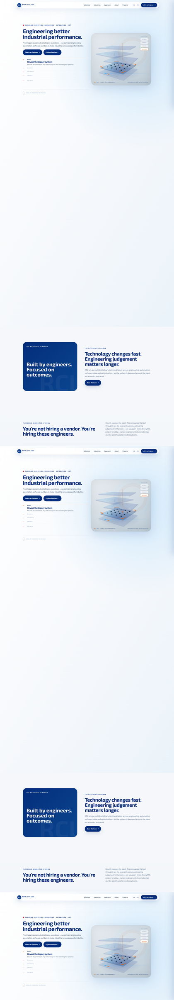</div><figcaption>Home</figcaption></figure><figure class="strip"><div class="strip-win">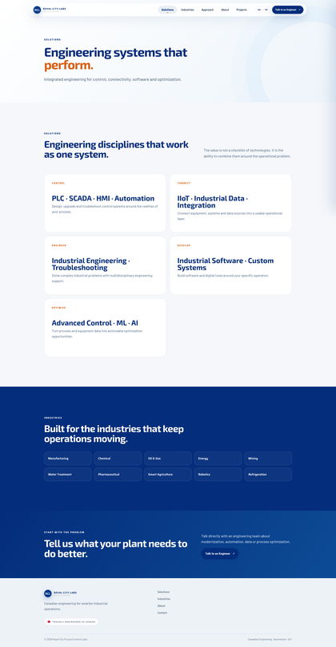</div><figcaption>Solutions</figcaption></figure><figure class="strip"><div class="strip-win">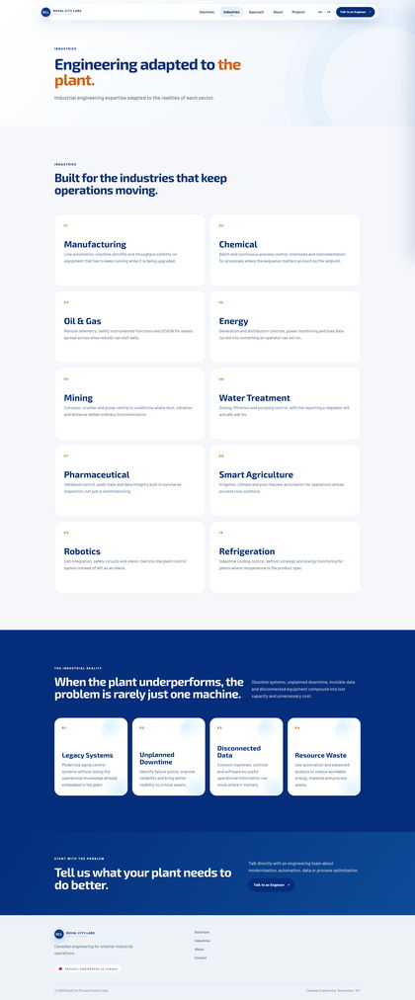</div><figcaption>Industries</figcaption></figure><figure class="strip"><div class="strip-win">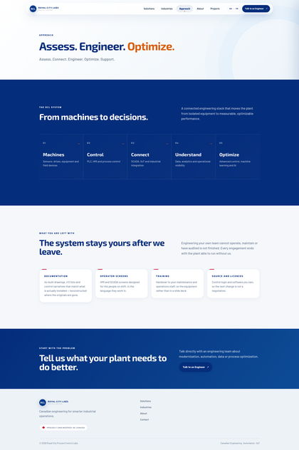</div><figcaption>Approach</figcaption></figure><figure class="strip"><div class="strip-win">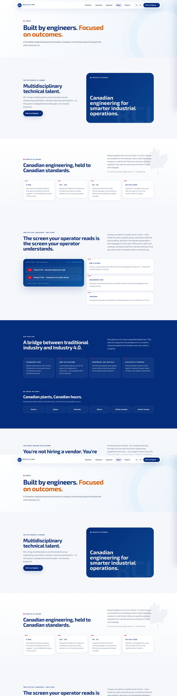</div><figcaption>About</figcaption></figure><figure class="strip"><div class="strip-win">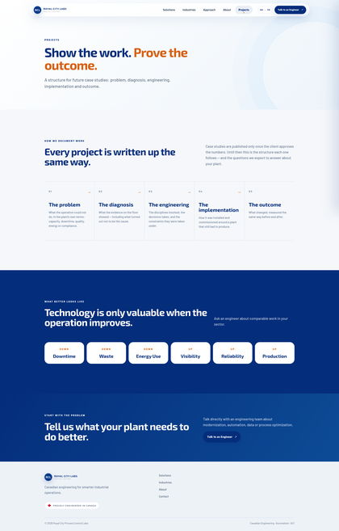</div><figcaption>Projects</figcaption></figure><figure class="strip"><div class="strip-win">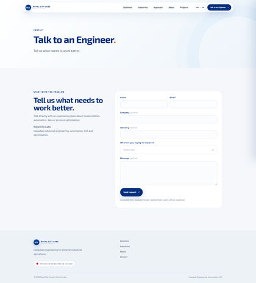</div><figcaption>Contact</figcaption></figure><figure class="strip"><div class="strip-win">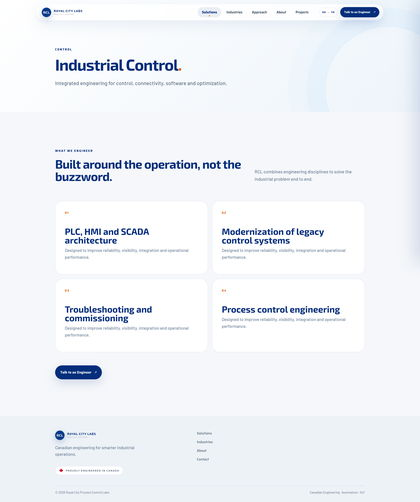</div><figcaption>Solutions › Control</figcaption></figure><figure class="strip"><div class="strip-win">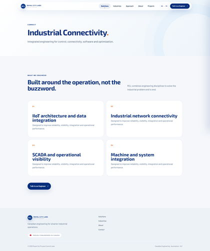</div><figcaption>Solutions › Connect</figcaption></figure><figure class="strip"><div class="strip-win">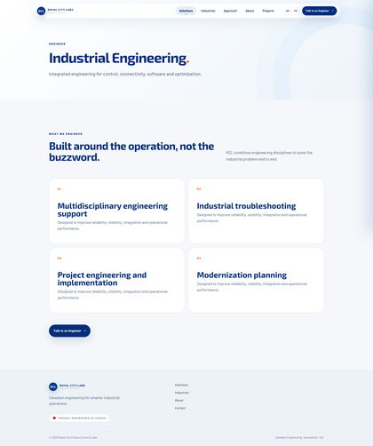</div><figcaption>Solutions › Engineer</figcaption></figure><figure class="strip"><div class="strip-win">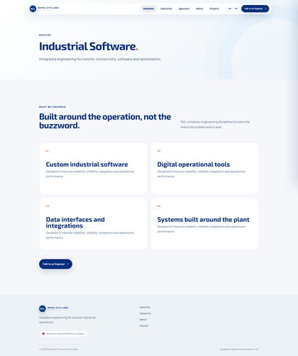</div><figcaption>Solutions › Develop</figcaption></figure><figure class="strip"><div class="strip-win">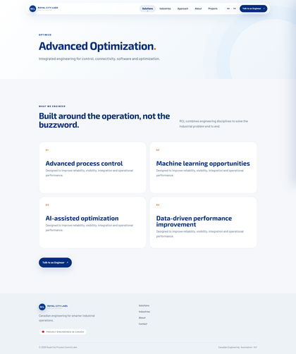</div><figcaption>Solutions › Optimize</figcaption></figure></div></div><footer class="pcap"><p>As doze rotas na mesma escala, cada uma cortada onde a folha termina. As alturas relativas mostram quanto há para ler em cada rota. Todas são capturas reais.</p></footer><div class="pfoot"><span>Royal City Labs — Pré-visualização do site</span><span class="pno">4</span></div></section><section class="page content"><header class="phead"><div class="phead-l"><div class="eyebrow">02 · HOME</div><h2>A primeira tela</h2></div><div class="phead-r"><span class="mchip">Desktop · 1600 × 1000</span><span class="mchip">royalcitylabs.ca/en</span></div></header><div class="stage"><div class="shotframe">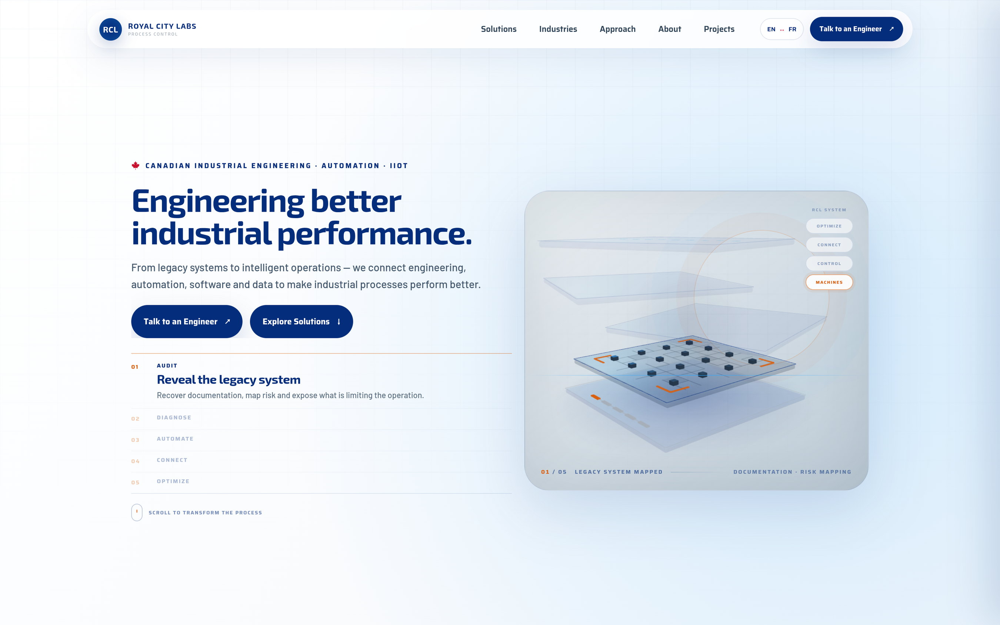</div></div><footer class="pcap"><p>Primeira pintura. Título, os dois botões de ação e o índice de cinco passos no lugar, e o modelo 3D mostrando apenas a camada que a planta já tem — outras três esperam fora de registro acima dela. O vazio acima da camada sólida é o argumento: faltam três camadas.</p><div class="chips"><span>Título + duas ações</span><span>Índice de cinco passos</span><span>Modelo 3D em repouso</span></div></footer><div class="pfoot"><span>Royal City Labs — Pré-visualização do site</span><span class="pno">5</span></div></section><section class="page content"><header class="phead"><div class="phead-l"><div class="eyebrow">02 · HOME</div><h2>A narrativa dirigida pelo scroll</h2></div><div class="phead-r"><span class="mchip">Desktop · 1600 × 1000</span><span class="mchip">royalcitylabs.ca/en</span></div></header><div class="stage"><div class="grid"><figure class="gcell" style="width:86.33mm"><div class="shotframe">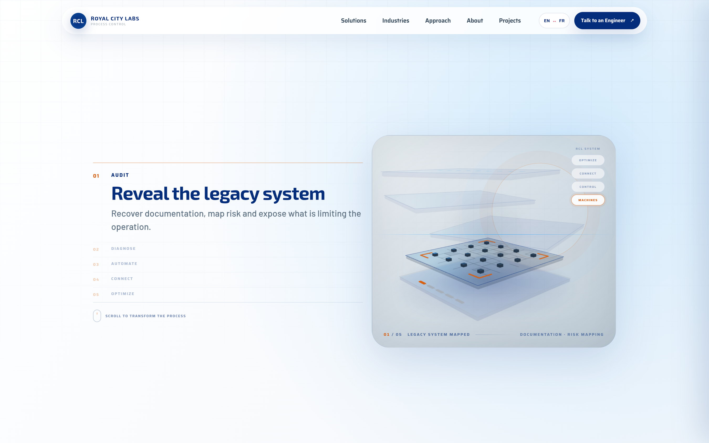</div><figcaption class="glabel">01 · AUDIT</figcaption></figure><figure class="gcell" style="width:86.33mm"><div class="shotframe">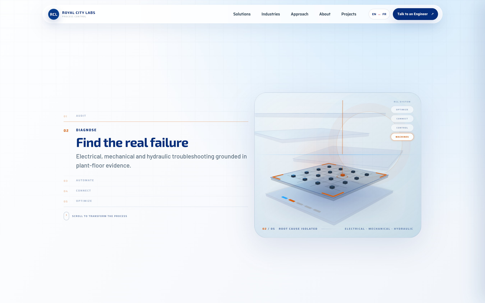</div><figcaption class="glabel">02 · DIAGNOSE</figcaption></figure><figure class="gcell" style="width:86.33mm"><div class="shotframe">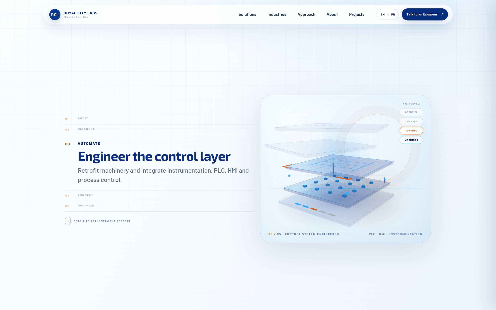</div><figcaption class="glabel">03 · AUTOMATE</figcaption></figure><figure class="gcell" style="width:86.33mm"><div class="shotframe">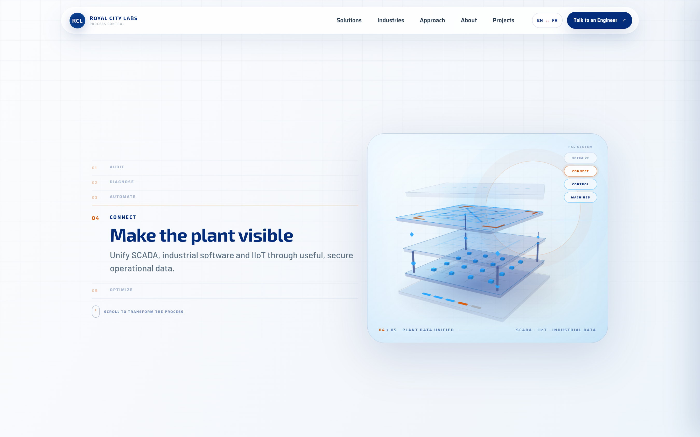</div><figcaption class="glabel">04 · CONNECT</figcaption></figure><figure class="gcell" style="width:86.33mm"><div class="shotframe">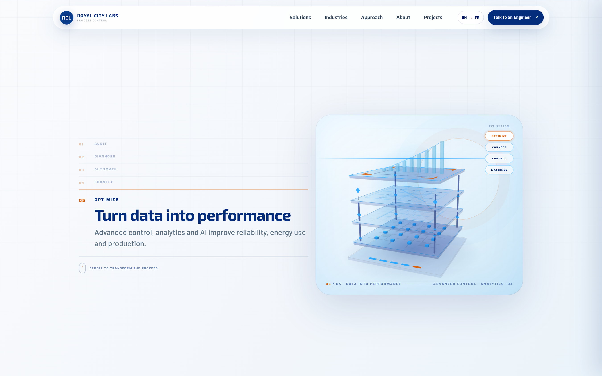</div><figcaption class="glabel">05 · OPTIMIZE</figcaption></figure><figure class="gcell" style="width:86.33mm"><div class="shotframe"></div><figcaption class="glabel">REPOUSO</figcaption></figure></div></div><footer class="pcap"><p>Conforme o visitante desce a home, o título recolhe e os cinco passos de engenharia se abrem um a um — enquanto o modelo 3D se monta camada por camada: a planta existente, o diagnóstico da falha, a camada de controle, a rede, e por fim a analítica com o laço fechado. O laranja tem uma função só no site inteiro: marcar o passo descrito agora.</p></footer><div class="pfoot"><span>Royal City Labs — Pré-visualização do site</span><span class="pno">6</span></div></section><section class="page content"><header class="phead"><div class="phead-l"><div class="eyebrow">02 · HOME</div><h2>Os engenheiros, não o fornecedor</h2></div><div class="phead-r"><span class="mchip">Desktop · 1600 × 1000</span><span class="mchip">royalcitylabs.ca/en</span></div></header><div class="stage"><div class="shotframe">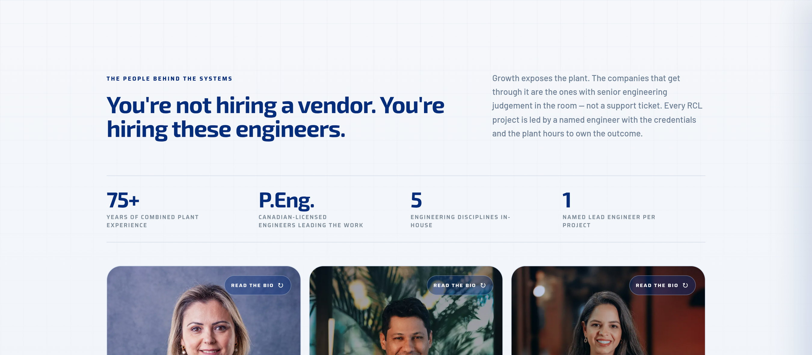</div></div><footer class="pcap"><p>Faixa de credibilidade sobre cards que viram: retrato, tempo de casa, função e credenciais na frente; a biografia completa no verso, ao passar o mouse ou tocar. <b>Os números da faixa são provisórios</b> e dependem de confirmação de vocês.</p></footer><div class="pfoot"><span>Royal City Labs — Pré-visualização do site</span><span class="pno">7</span></div></section><section class="page content"><header class="phead"><div class="phead-l"><div class="eyebrow">02 · HOME</div><h2>O sistema RCL</h2></div><div class="phead-r"><span class="mchip">Desktop · 1600 × 1000</span><span class="mchip">royalcitylabs.ca/en</span></div></header><div class="stage"><div class="shotframe">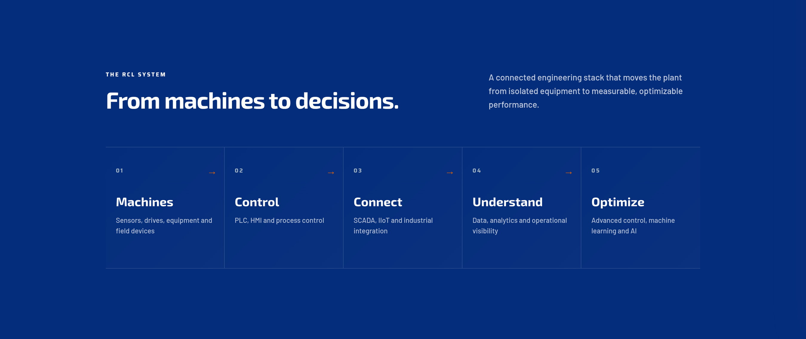</div></div><footer class="pcap"><p>Cinco passos, de máquinas a decisões. É o mesmo vocabulário que o modelo 3D do hero desenha, então a imagem no topo e a explicação mais abaixo se leem como um argumento só.</p></footer><div class="pfoot"><span>Royal City Labs — Pré-visualização do site</span><span class="pno">8</span></div></section><section class="page content"><header class="phead"><div class="phead-l"><div class="eyebrow">03 · SOLUTIONS</div><h2>Solutions</h2></div><div class="phead-r"><span class="mchip">Desktop · 1600 × 1000</span><span class="mchip">royalcitylabs.ca/en/solutions</span></div></header><div class="stage"><div class="shotframe has-bar"><div class="bar"><i></i><i></i><i></i><span class="url">royalcitylabs.ca/en/solutions</span></div>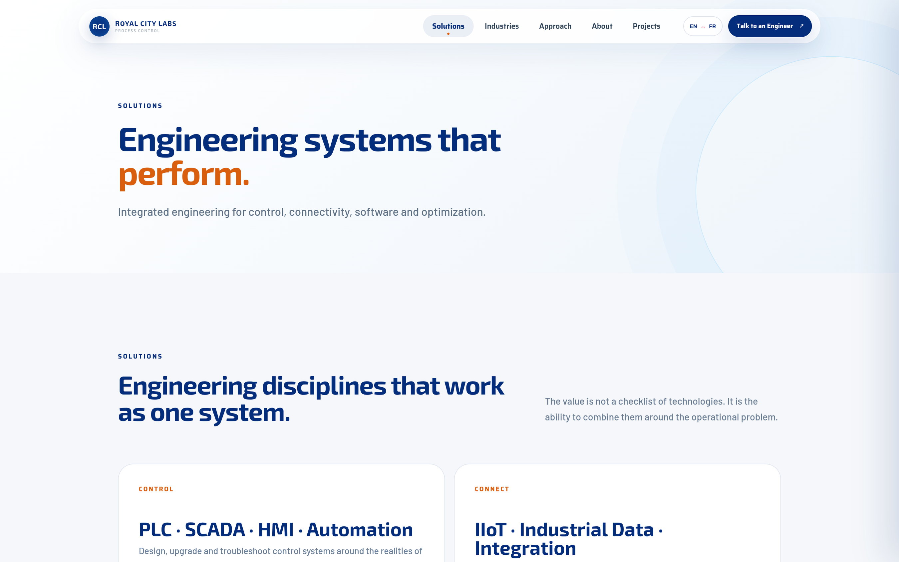</div></div><footer class="pcap"><p>A navegação principal marca a rota atual com um ponto laranja sob o rótulo, então quem cai aqui a partir de uma busca sabe onde está. A página lista as cinco disciplinas e entrega cada uma a uma rota de detalhe própria.</p></footer><div class="pfoot"><span>Royal City Labs — Pré-visualização do site</span><span class="pno">9</span></div></section><section class="page content"><header class="phead"><div class="phead-l"><div class="eyebrow">03 · SOLUTIONS</div><h2>As cinco rotas de detalhe</h2></div><div class="phead-r"><span class="mchip">Desktop · 1600 × 1000</span><span class="mchip">royalcitylabs.ca/en/solutions/…</span></div></header><div class="stage"><div class="grid"><figure class="gcell" style="width:86.33mm"><div class="shotframe">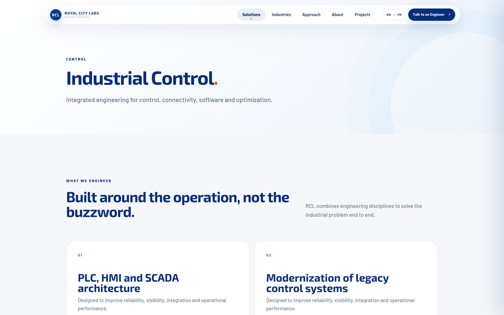</div><figcaption class="glabel">CONTROL</figcaption></figure><figure class="gcell" style="width:86.33mm"><div class="shotframe">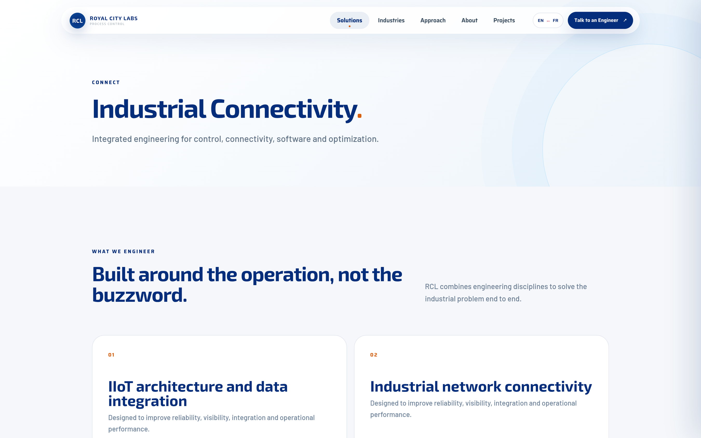</div><figcaption class="glabel">CONNECT</figcaption></figure><figure class="gcell" style="width:86.33mm"><div class="shotframe">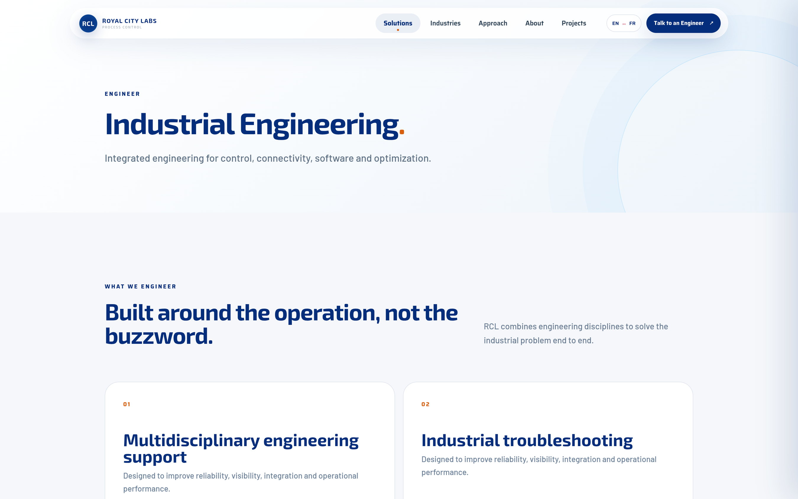</div><figcaption class="glabel">ENGINEER</figcaption></figure><figure class="gcell" style="width:86.33mm"><div class="shotframe">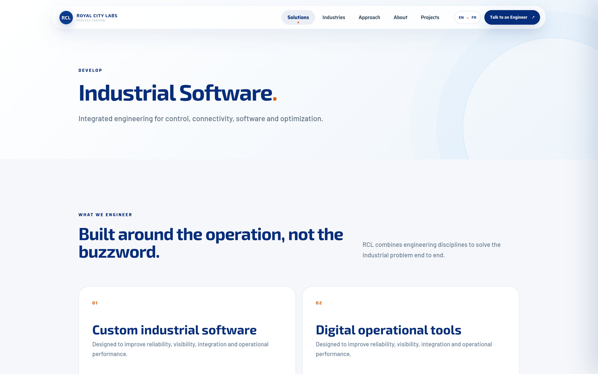</div><figcaption class="glabel">DEVELOP</figcaption></figure><figure class="gcell" style="width:86.33mm"><div class="shotframe">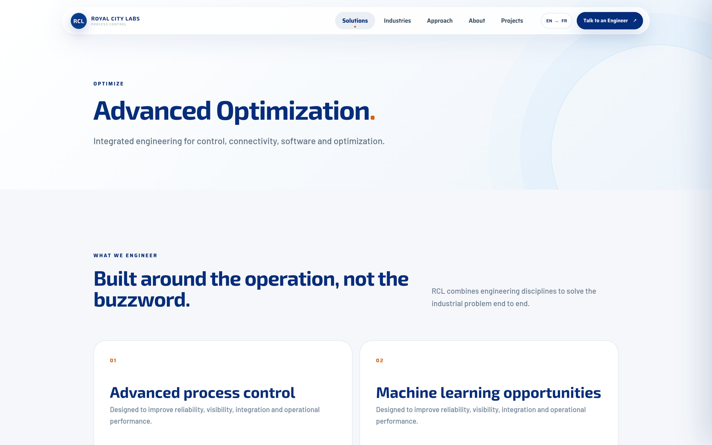</div><figcaption class="glabel">OPTIMIZE</figcaption></figure></div></div><footer class="pcap"><p>Controle industrial, conectividade industrial, engenharia industrial, software industrial e otimização avançada. Cada uma tem URL, title tag e meta description próprios, e quatro cards de capacidade específicos — dez rotas no total, contando o francês.</p></footer><div class="pfoot"><span>Royal City Labs — Pré-visualização do site</span><span class="pno">10</span></div></section><section class="page content"><header class="phead"><div class="phead-l"><div class="eyebrow">04 · INDUSTRIES</div><h2>Dez setores, dez descrições</h2></div><div class="phead-r"><span class="mchip">Desktop · 1600 × 1000</span><span class="mchip">royalcitylabs.ca/en/industries</span></div></header><div class="stage"><div class="shotframe">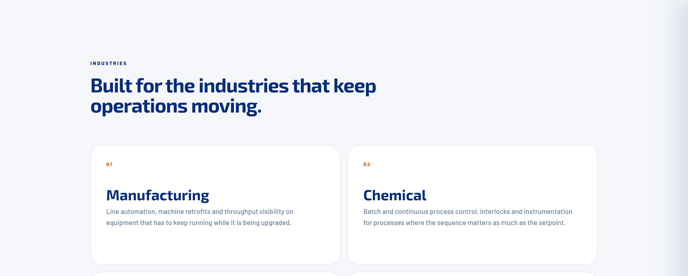</div></div><footer class="pcap"><p>Cada setor tem uma descrição distinta nos dois idiomas — os dez aparecem na miniatura da página 4. As descrições falam de capacidade e nunca alegam resultado, porque nenhum resultado foi aprovado para publicação ainda.</p></footer><div class="pfoot"><span>Royal City Labs — Pré-visualização do site</span><span class="pno">11</span></div></section><section class="page content"><header class="phead"><div class="phead-l"><div class="eyebrow">05 · APPROACH</div><h2>O que fica com vocês</h2></div><div class="phead-r"><span class="mchip">Desktop · 1600 × 1000</span><span class="mchip">royalcitylabs.ca/en/approach</span></div></header><div class="stage"><div class="shotframe">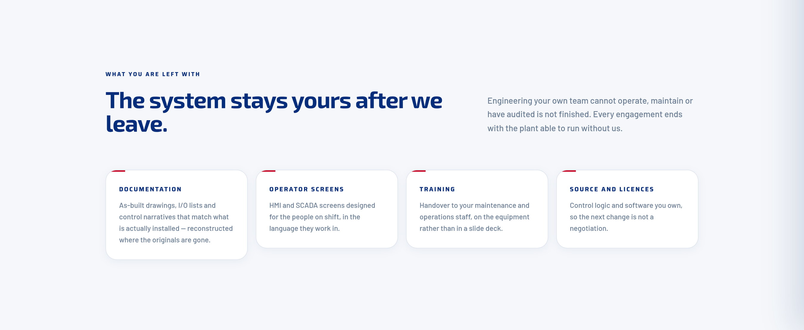</div></div><footer class="pcap"><p>A pergunta que um diretor de operações realmente faz antes de assinar: documentação as-built, telas de operador, treinamento, código-fonte e licenças. <b>Este texto é uma proposta e precisa da revisão de vocês</b> — ele descreve como vocês trabalham.</p></footer><div class="pfoot"><span>Royal City Labs — Pré-visualização do site</span><span class="pno">12</span></div></section><section class="page content"><header class="phead"><div class="phead-l"><div class="eyebrow">06 · ABOUT</div><h2>About</h2></div><div class="phead-r"><span class="mchip">Desktop · 1600 × 1000</span><span class="mchip">royalcitylabs.ca/en/about</span></div></header><div class="stage"><div class="shotframe has-bar"><div class="bar"><i></i><i></i><i></i><span class="url">royalcitylabs.ca/en/about</span></div>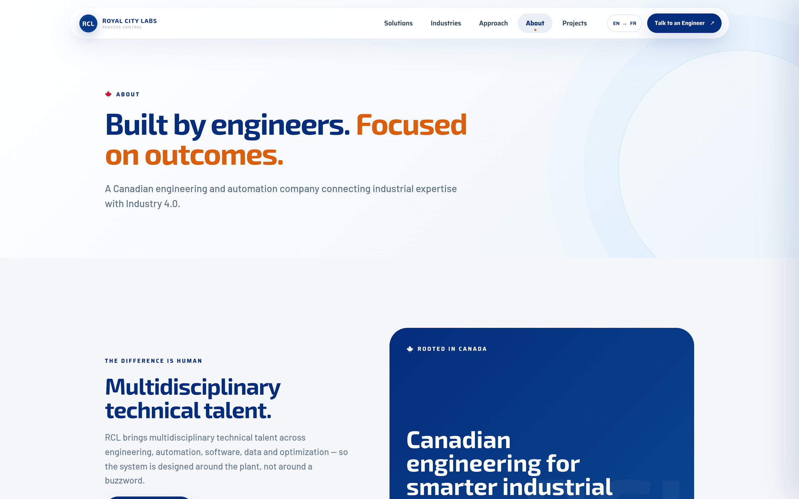</div></div><footer class="pcap"><p>A rota da credibilidade: quem são os engenheiros, as normas a que o trabalho responde, a prova de entrega bilíngue e o posicionamento entre a indústria tradicional e a Indústria 4.0. CSA, IEC e ISO aparecem como referência de projeto, nunca como certificação.</p></footer><div class="pfoot"><span>Royal City Labs — Pré-visualização do site</span><span class="pno">13</span></div></section><section class="page content"><header class="phead"><div class="phead-l"><div class="eyebrow">06 · ABOUT</div><h2>Entrega bilíngue, demonstrada</h2></div><div class="phead-r"><span class="mchip">Desktop · 1600 × 1000</span><span class="mchip">royalcitylabs.ca/en/about</span></div></header><div class="stage"><div class="shotframe">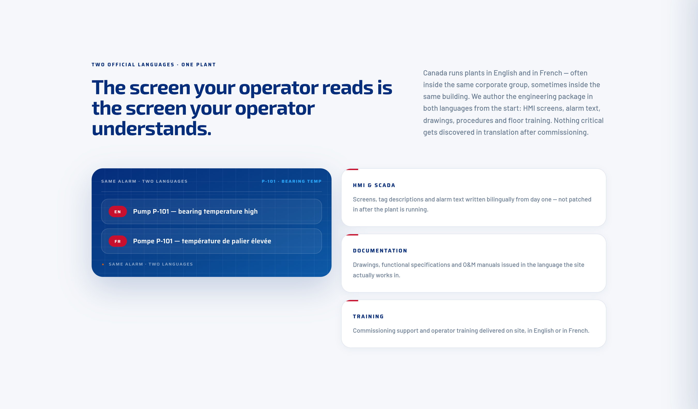</div></div><footer class="pcap"><p>Em vez de alegar capacidade bilíngue, a página mostra: um painel de operador de exemplo com os rótulos em inglês e francês lado a lado, ao lado dos entregáveis que saem nos dois idiomas. É a diferença entre dizer e provar.</p></footer><div class="pfoot"><span>Royal City Labs — Pré-visualização do site</span><span class="pno">14</span></div></section><section class="page content"><header class="phead"><div class="phead-l"><div class="eyebrow">06 · ABOUT</div><h2>A equipe completa</h2></div><div class="phead-r"><span class="mchip">Desktop · 1600 × 1000</span><span class="mchip">royalcitylabs.ca/en/about</span></div></header><div class="stage"><div class="shotframe">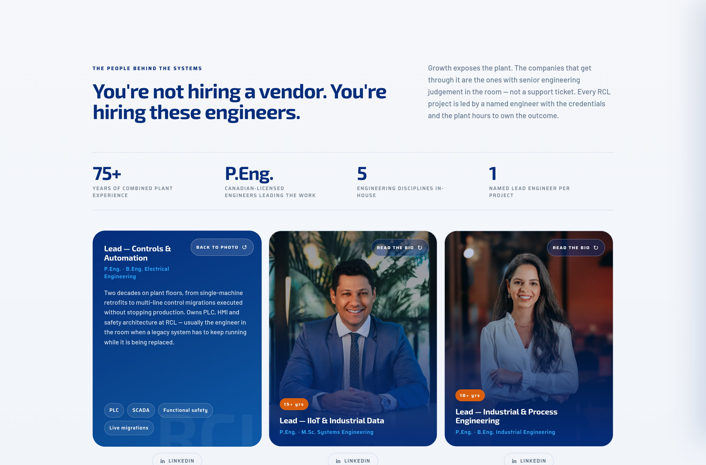</div></div><footer class="pcap"><p>O grid de engenheiros com um card virado, como o visitante veria enquanto lê. <b>Os retratos são substitutos licenciados</b> até as fotos reais serem aprovadas; funções e credenciais são propostas para revisão de vocês.</p></footer><div class="pfoot"><span>Royal City Labs — Pré-visualização do site</span><span class="pno">15</span></div></section><section class="page content"><header class="phead"><div class="phead-l"><div class="eyebrow">07 · PROJECTS</div><h2>A estrutura de documentação</h2></div><div class="phead-r"><span class="mchip">Desktop · 1600 × 1000</span><span class="mchip">royalcitylabs.ca/en/projects</span></div></header><div class="stage"><div class="shotframe">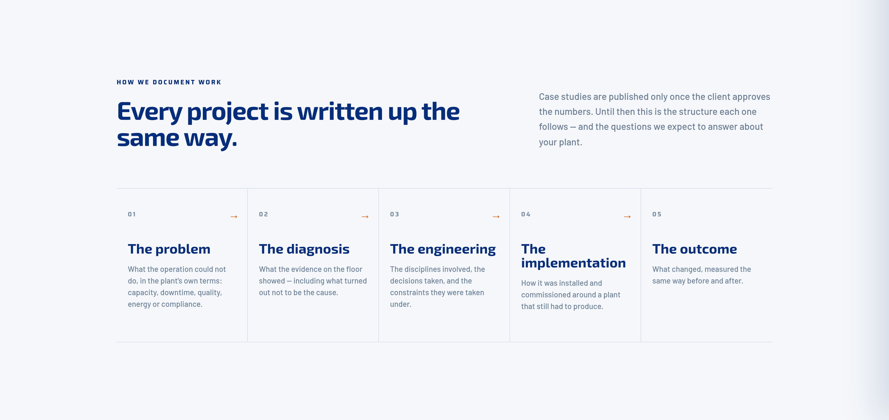</div></div><footer class="pcap"><p>Nenhum case foi inventado. A página apresenta a estrutura de cinco passos que todo relato de projeto segue — situação, diagnóstico, engenharia, comissionamento, resultado — e diz abertamente por que os números ainda não estão lá. Quando vocês aprovarem um projeto real, ele entra direto nesse formato.</p></footer><div class="pfoot"><span>Royal City Labs — Pré-visualização do site</span><span class="pno">16</span></div></section><section class="page content"><header class="phead"><div class="phead-l"><div class="eyebrow">08 · CONTACT</div><h2>O formulário não é maquete</h2></div><div class="phead-r"><span class="mchip">Desktop · 1600 × 1000</span><span class="mchip">royalcitylabs.ca/en/contact</span></div></header><div class="stage"><div class="shotframe">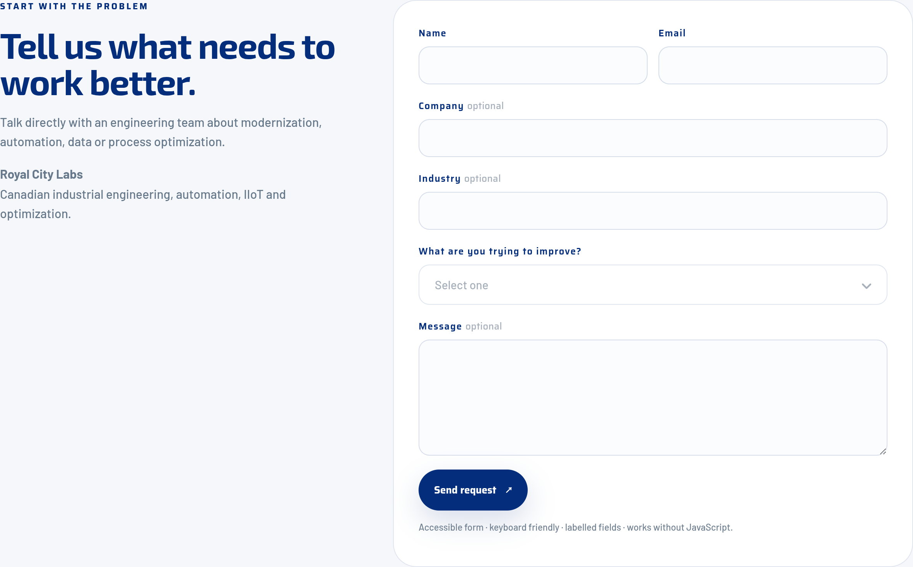</div></div><footer class="pcap"><p>Seis campos, dois obrigatórios. Os rótulos são permanentes — nunca placeholders que desaparecem assim que alguém digita. Todo campo é validado no servidor, o envio tem limite de taxa e triagem anti-bot, e o formulário funciona com o JavaScript desligado.</p></footer><div class="pfoot"><span>Royal City Labs — Pré-visualização do site</span><span class="pno">17</span></div></section><section class="page content"><header class="phead"><div class="phead-l"><div class="eyebrow">08 · CONTACT</div><h2>O formulário em uso</h2></div><div class="phead-r"><span class="mchip">Desktop · 1600 × 1000</span><span class="mchip">royalcitylabs.ca/en/contact</span></div></header><div class="stage"><div class="grid"><figure class="gcell" style="width:86.33mm"><div class="shotframe">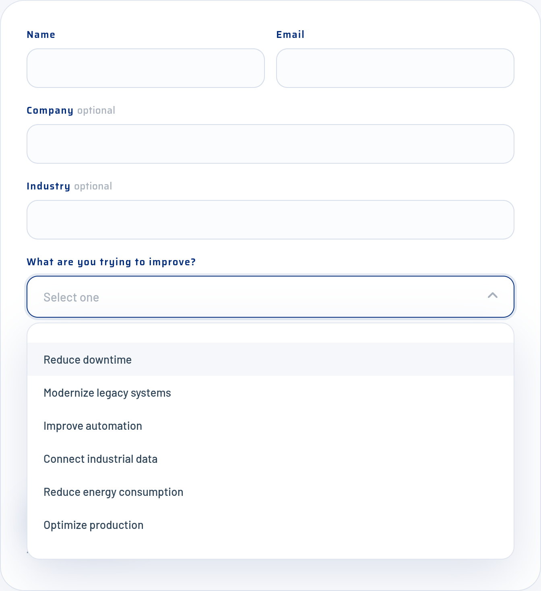</div><figcaption class="glabel">SELETOR ABERTO</figcaption></figure><figure class="gcell" style="width:86.33mm"><div class="shotframe">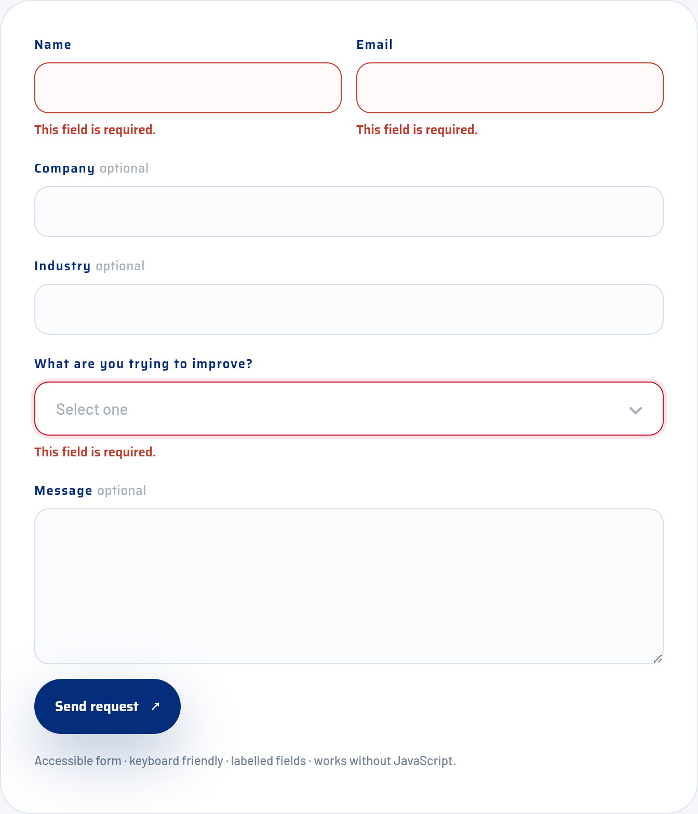</div><figcaption class="glabel">VALIDAÇÃO NO SERVIDOR</figcaption></figure><figure class="gcell" style="width:86.33mm"><div class="shotframe">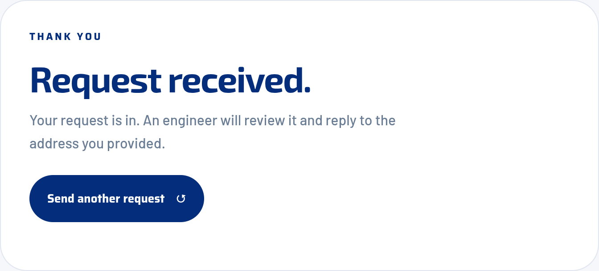</div><figcaption class="glabel">CONFIRMAÇÃO</figcaption></figure></div></div><footer class="pcap"><p>À esquerda: o seletor de desafio é um listbox próprio, operável por teclado, com os valores conferidos contra uma allow-list no servidor. No centro: um envio vazio — a validação roda no servidor, não só no navegador, e cada mensagem é anunciada a leitores de tela e traduzida por idioma; o que já foi digitado sobrevive ao erro. À direita: a confirmação, verificada de ponta a ponta contra um webhook real nesta revisão.</p></footer><div class="pfoot"><span>Royal City Labs — Pré-visualização do site</span><span class="pno">18</span></div></section><section class="page content"><header class="phead"><div class="phead-l"><div class="eyebrow">09 · TABLET</div><h2>O layout muda de forma no tablet</h2></div><div class="phead-r"><span class="mchip">Tablet · 900 e 768 px</span></div></header><div class="stage"><div class="grid"><figure class="gcell" style="width:63.50mm"><div class="tablet">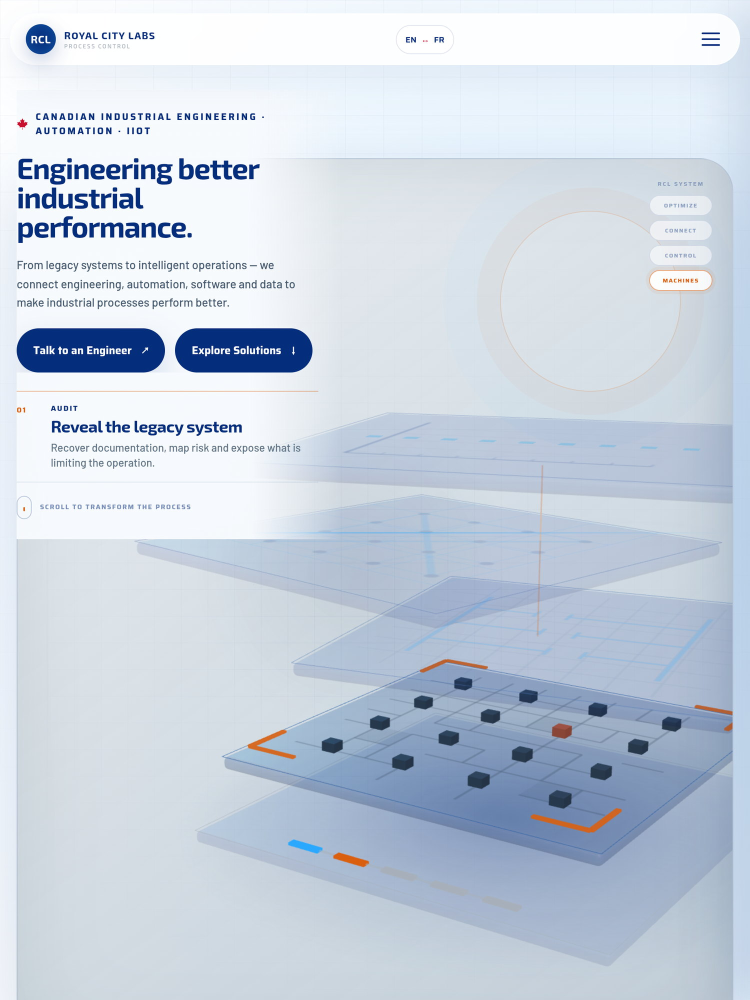</div><figcaption class="glabel">HOME · 900</figcaption></figure><figure class="gcell" style="width:63.50mm"><div class="tablet">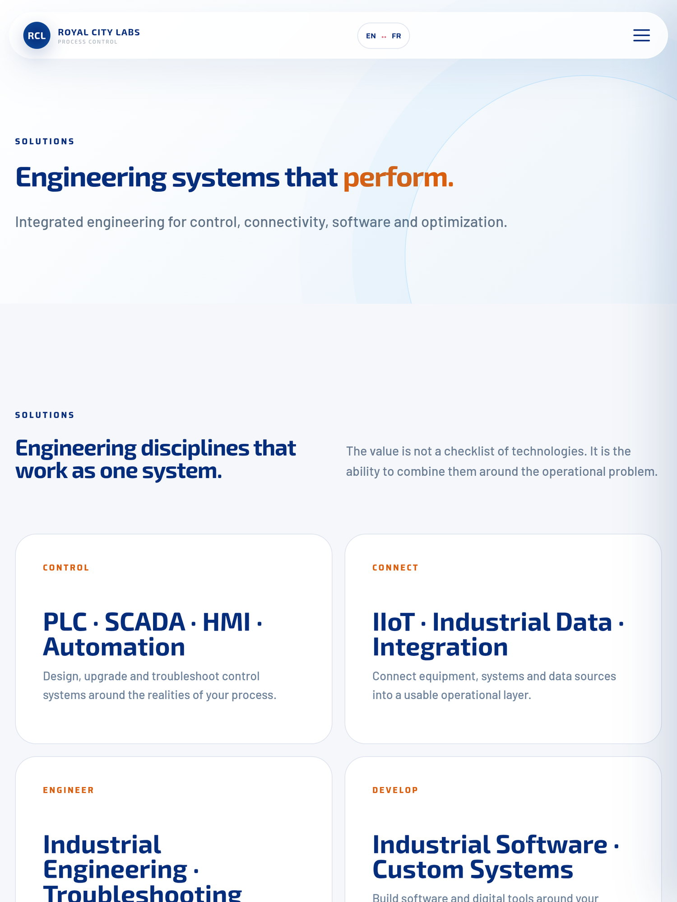</div><figcaption class="glabel">SOLUTIONS · 900</figcaption></figure><figure class="gcell" style="width:63.50mm"><div class="tablet">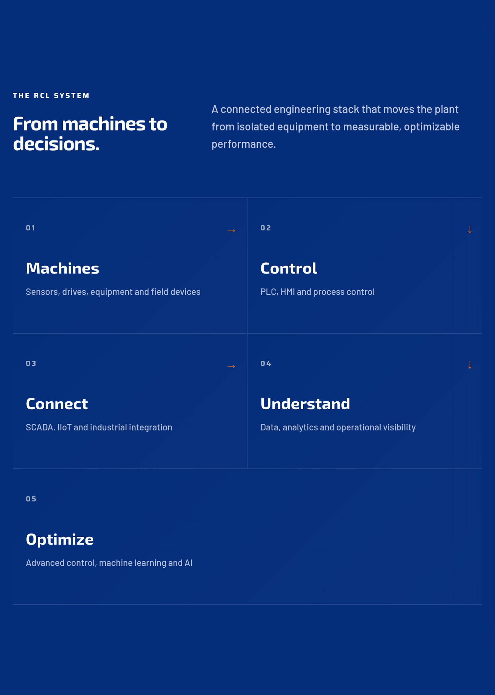</div><figcaption class="glabel">APPROACH · 768</figcaption></figure><figure class="gcell" style="width:63.50mm"><div class="tablet">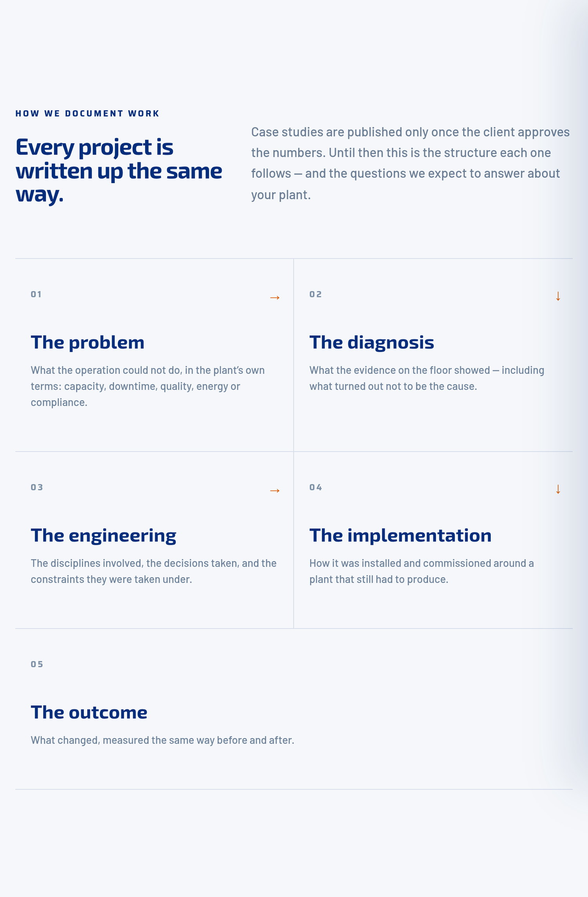</div><figcaption class="glabel">PROJECTS · 768</figcaption></figure></div></div><footer class="pcap"><p>Entre 701 e 1100 pixels a navegação principal se recolhe no botão de menu, o hero se divide e os grids de várias colunas se reorganizam. Nos dois da direita, em 768 px, o grid de cinco passos dobra para duas colunas com o quinto passo ocupando a largura — antes desta revisão ele ficava cortado na borda.</p></footer><div class="pfoot"><span>Royal City Labs — Pré-visualização do site</span><span class="pno">19</span></div></section><section class="page content"><header class="phead"><div class="phead-l"><div class="eyebrow">09 · CELULAR</div><h2>No celular</h2></div><div class="phead-r"><span class="mchip">Celular · 430 × 932</span></div></header><div class="stage"><div class="grid"><figure class="gcell" style="width:49.80mm"><div class="phone">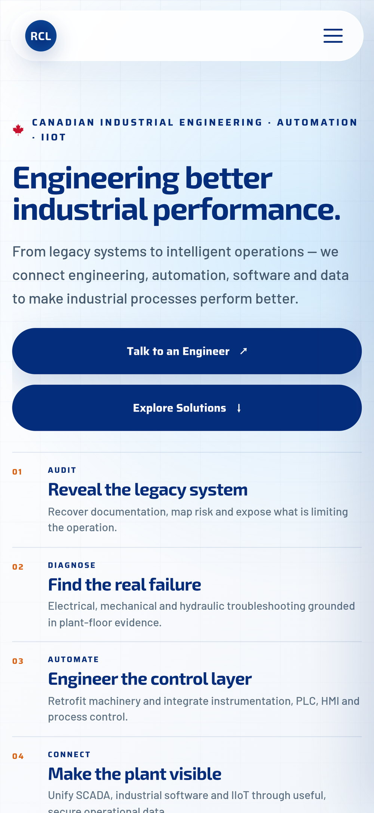</div><figcaption class="glabel">HOME</figcaption></figure><figure class="gcell" style="width:49.80mm"><div class="phone">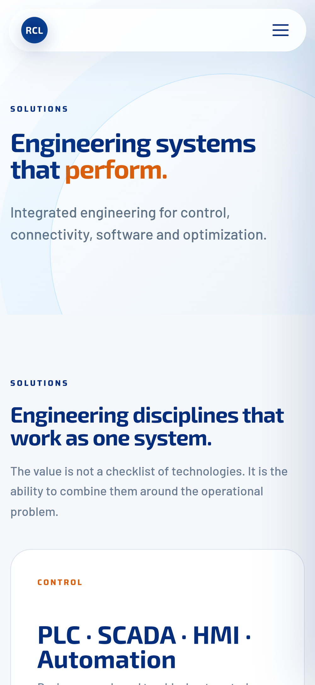</div><figcaption class="glabel">SOLUTIONS</figcaption></figure><figure class="gcell" style="width:49.80mm"><div class="phone">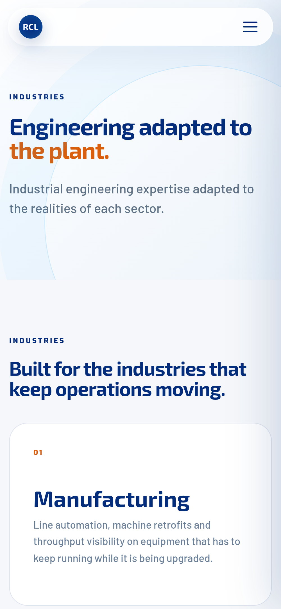</div><figcaption class="glabel">INDUSTRIES</figcaption></figure><figure class="gcell" style="width:49.80mm"><div class="phone">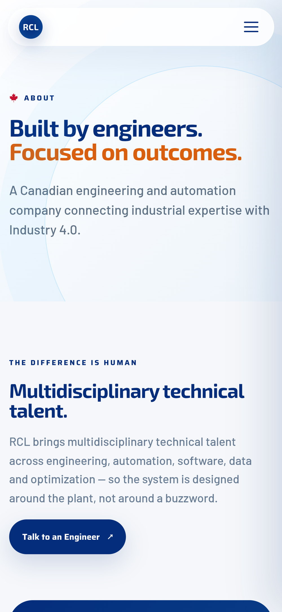</div><figcaption class="glabel">ABOUT</figcaption></figure><figure class="gcell" style="width:49.80mm"><div class="phone">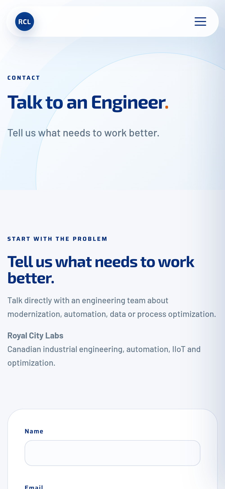</div><figcaption class="glabel">CONTACT</figcaption></figure><figure class="gcell" style="width:49.80mm"><div class="phone">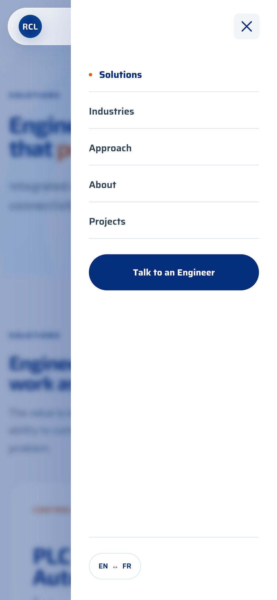</div><figcaption class="glabel">NAVEGAÇÃO</figcaption></figure><figure class="gcell" style="width:49.80mm"><div class="phone">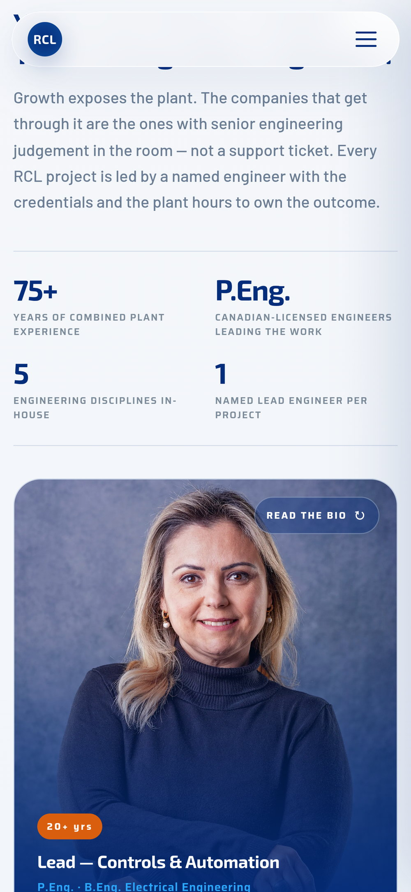</div><figcaption class="glabel">HOME · SCROLL</figcaption></figure><figure class="gcell" style="width:49.80mm"><div class="phone">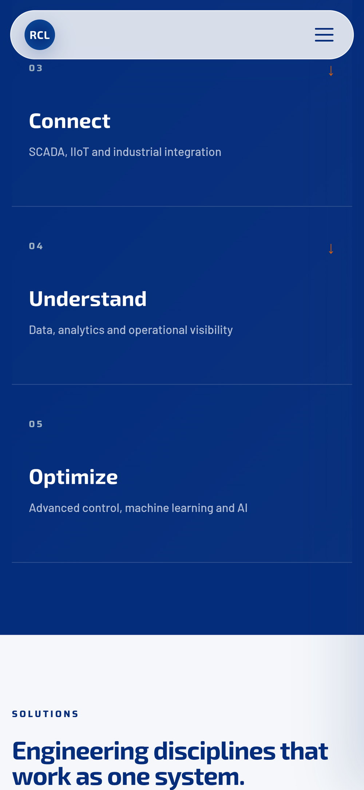</div><figcaption class="glabel">HOME · SCROLL</figcaption></figure><figure class="gcell" style="width:49.80mm"><div class="phone">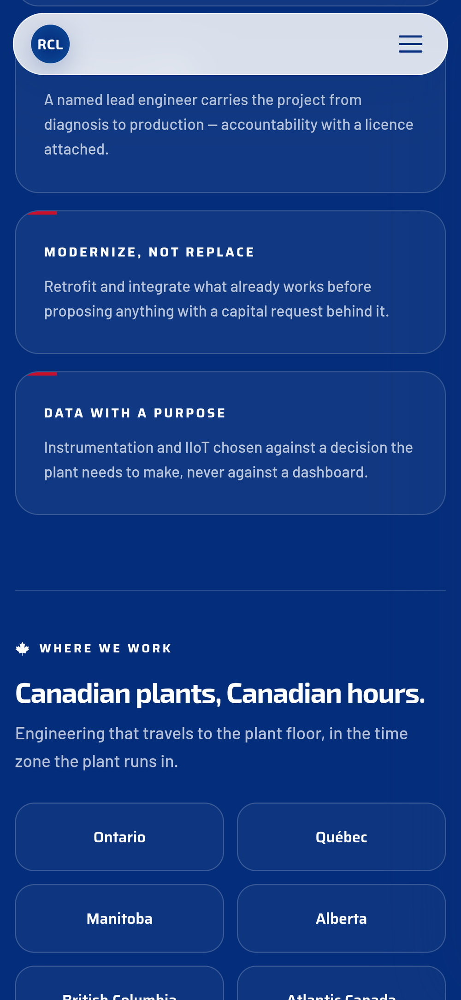</div><figcaption class="glabel">ABOUT · SCROLL</figcaption></figure><figure class="gcell" style="width:49.80mm"><div class="phone">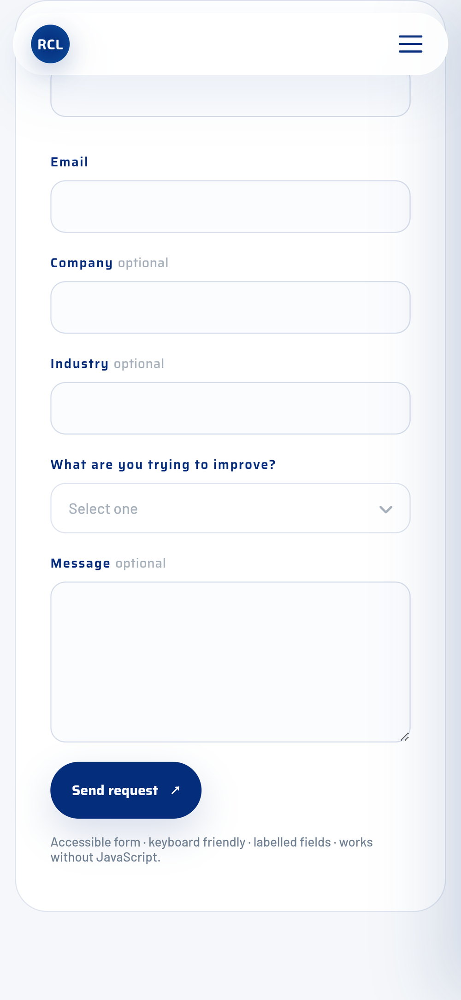</div><figcaption class="glabel">FORMULÁRIO</figcaption></figure></div></div><footer class="pcap"><p>Cinco rotas como carregam, o painel de navegação com a rota atual marcada e o botão EN ↔ FR no pé, e quatro telas mais abaixo nas páginas. No celular o hero apresenta o estado final em vez de animar, então nada depende de um gesto de scroll. A edição completa percorre as oito rotas inteiras, quadro por quadro.</p></footer><div class="pfoot"><span>Royal City Labs — Pré-visualização do site</span><span class="pno">20</span></div></section><section class="page content"><header class="phead"><div class="phead-l"><div class="eyebrow">10 · FRANÇAIS</div><h2>O site francês não é uma camada de tradução</h2></div><div class="phead-r"><span class="mchip">Desktop · 1600 × 1000</span><span class="mchip">royalcitylabs.ca/fr/…</span></div></header><div class="stage"><div class="grid"><figure class="gcell" style="width:132.00mm"><div class="shotframe"></div><figcaption class="glabel">ACCUEIL</figcaption></figure><figure class="gcell" style="width:132.00mm"><div class="shotframe"></div><figcaption class="glabel">SOLUTIONS</figcaption></figure><figure class="gcell" style="width:132.00mm"><div class="shotframe"></div><figcaption class="glabel">À PROPOS</figcaption></figure><figure class="gcell" style="width:132.00mm"><div class="shotframe"></div><figcaption class="glabel">CONTACT</figcaption></figure></div></div><footer class="pcap"><p>São doze rotas próprias, cada uma com URL, título, meta description e texto seus, servidas como fr-CA e pareadas com a rota inglesa por hreflang. Os rótulos do formulário, as opções do seletor e todas as mensagens de validação estão traduzidos. Trocar de idioma mantém o visitante na mesma página: /en/industries se torna /fr/industries.</p></footer><div class="pfoot"><span>Royal City Labs — Pré-visualização do site</span><span class="pno">21</span></div></section><section class="page content"><header class="phead"><div class="phead-l"><div class="eyebrow">11 · DETALHES</div><h2>As partes que só existem em movimento</h2></div><div class="phead-r"><span class="mchip">Desktop · 1600 × 1000</span></div></header><div class="stage stage-col"><div class="grid" style="height:20.00mm"><figure class="gcell" style="width:269.00mm"><div class="shotframe"></div><figcaption class="glabel">A NAVEGAÇÃO MARCA A ROTA ATUAL</figcaption></figure></div><div class="grid" style="height:54.00mm"><figure class="gcell" style="width:269.00mm"><div class="shotframe"></div><figcaption class="glabel">RODAPÉ, ANCORADO NAS TROCAS DE ROTA</figcaption></figure></div><div class="grid" style="height:68.00mm"><figure class="gcell" style="width:132.00mm"><div class="shotframe"></div><figcaption class="glabel">CARD — FRENTE</figcaption></figure><figure class="gcell" style="width:132.00mm"><div class="shotframe"></div><figcaption class="glabel">CARD — VERSO</figcaption></figure></div></div><footer class="pcap"><p>A página atual fica mais forte, com fundo tingido e um ponto laranja sob o rótulo — a mesma convenção de laranja do modelo 3D; leitores de tela recebem aria-current="page" no mesmo link. O rodapé é ancorado, então não pisca quando o visitante navega. O card de engenheiro é um botão de verdade: funciona pelo teclado, e vira para a biografia no mouse ou no toque.</p></footer><div class="pfoot"><span>Royal City Labs — Pré-visualização do site</span><span class="pno">22</span></div></section><section class="page content"><header class="phead"><div class="phead-l"><div class="eyebrow">RESUMO TÉCNICO</div><h2>Sobre o que foi construído<span class="dot">.</span></h2></div><div class="phead-r"></div></header><div class="prose">
<div class="cols2">
 <div>
  <h3>Stack</h3>
  <table class="spec">
   <tr><th>Framework</th><td>Next.js 16, App Router</td></tr>
   <tr><th>Interface</th><td>React 19, TypeScript (strict)</td></tr>
   <tr><th>3D</th><td>React Three Fiber + drei sobre three.js — geometria gerada em código, sem asset de megabytes</td></tr>
   <tr><th>Movimento</th><td>Framer Motion nas entradas; a própria View Transitions API do navegador nas trocas de rota</td></tr>
   <tr><th>Estilo</th><td>CSS escrito à mão sobre um sistema de tokens</td></tr>
   <tr><th>Tipografia</th><td>Exo 2 · Saira · Barlow, hospedadas no próprio domínio</td></tr>
  </table>
  <h3>Entrega e desempenho</h3>
  <p>As 24 rotas são pré-renderizadas como HTML estático no build, então a primeira pintura nunca
     espera servidor. As fontes vêm do domínio do cliente em vez do Google, o que elimina três
     idas e voltas antes do primeiro glifo. O hero 3D custa cerca de 29 draw calls e menos de
     3.000 triângulos, e o loop de render para por completo quando o modelo sai da tela.</p>
  <h3>O formulário</h3>
  <ul class="ticks">
   <li>Validado no servidor — as checagens do navegador são conveniência, não barreira</li>
   <li>Campo honeypot oculto e limite de cinco envios por dez minutos por endereço</li>
   <li>Funciona com o JavaScript desativado</li>
   <li>Entrega plugável: webhook (CRM, Zapier, Make, n8n, Slack) ou e-mail transacional</li>
  </ul>
 </div>
 <div>
  <h3>Acessibilidade</h3>
  <ul class="ticks">
   <li>Idioma correto no documento: <span class="mono">en-CA</span> / <span class="mono">fr-CA</span></li>
   <li><span class="mono">aria-current="page"</span> no link ativo, nas duas navegações</li>
   <li>Erros de formulário ligados aos campos com <span class="mono">aria-invalid</span> e <span class="mono">aria-describedby</span>, e anunciados</li>
   <li>Anel de foco visível em todo elemento interativo</li>
   <li>A narrativa inteira respeita <span class="mono">prefers-reduced-motion</span>: o modelo apresenta o estado final em vez de animar</li>
   <li>O modelo 3D tem alternativa textual traduzida; overlays decorativos ficam ocultos para leitores de tela</li>
  </ul>
  <h3>Encontrabilidade</h3>
  <ul class="ticks">
   <li>Title e meta description próprios nas 24 rotas</li>
   <li><span class="mono">hreflang</span> pareia cada rota inglesa com a gêmea francesa</li>
   <li>Dados estruturados de Organization (JSON-LD) em todas as páginas</li>
   <li><span class="mono">robots.txt</span> e <span class="mono">sitemap.xml</span> gerado</li>
   <li><span class="mono">/</span> redireciona para o idioma do próprio visitante</li>
  </ul>
  <p class="note">O contraste de cor é o único item aberto: 19 estilos de texto ficam abaixo do
     mínimo WCAG AA, o pior em 1,95:1. Tudo é legível — nada é invisível — e a causa são dois
     cinzas da marca usados em tamanhos pequenos. Ver a página seguinte.</p>
 </div>
</div></div><div class="pfoot"><span>Royal City Labs — Pré-visualização do site</span><span class="pno">23</span></div></section><section class="page content"><header class="phead"><div class="phead-l"><div class="eyebrow">QUALIDADE</div><h2>O que foi verificado, e o que apareceu<span class="dot">.</span></h2></div><div class="phead-r"></div></header><div class="prose">
<p class="lede">Este documento foi produzido dirigindo o build de produção num navegador real, o que
   permitiu testar o que uma revisão de código não vê. Apareceram seis defeitos reais — dois deles
   conteúdo que ninguém conseguia ler — e todos os seis estão corrigidos e reverificados.</p>
<div class="cols2">
 <div>
  <h3>Defeitos encontrados e corrigidos</h3>
  <table class="spec faults">
   <tr><th>Projects, todas as larguras</th><td><b>As descrições da estrutura estavam invisíveis.</b>
       O padrão de cinco passos foi escrito para o fundo azul que ele usa na Home e em Approach —
       texto e filetes brancos — e Projects o coloca numa seção clara. Branco no branco.</td></tr>
   <tr><th>Sete seções, 14 rotas</th><td><b>Títulos em seção escura eram azul-marinho sobre
       azul-marinho.</b> A regra compartilhada de título e a específica do fundo escuro tinham o
       mesmo peso, e a compartilhada foi escrita depois — então venceu.</td></tr>
   <tr><th>About, celulares</th><td>O painel bilíngue ficava num split de duas colunas mais largo
       que qualquer celular, cortando a borda direita.</td></tr>
   <tr><th>About, celulares e tablets</th><td>Seis pastilhas de região continuavam seis em toda
       largura, empurrando "British Columbia" para fora da borda.</td></tr>
   <tr><th>Grids de cinco passos, 701–1100 px</th><td>Cinco colunas num espaço que cabe três
       cortavam o passo 05 em Approach, Projects e na home francesa.</td></tr>
   <tr><th>Troca de idioma, celulares</th><td>Uma regra que enxuga o header também escondia o
       botão dentro do painel de navegação — o único na tela naquela largura.</td></tr>
  </table>
 </div>
 <div>
  <h3>Verificações que passam</h3>
  <ul class="ticks">
   <li>Lint, TypeScript e build de produção: limpos</li>
   <li>As 24 rotas pré-renderizam; sem erro de rota e sem erro de runtime no console</li>
   <li><b>195 combinações</b> — 15 páginas × 13 larguras de viewport, de 360 px a 1920 px, nos dois
       idiomas — verificadas contra scroll horizontal e conteúdo cortado: nada restou</li>
   <li>A narrativa 3D renderiza e avança corretamente nos cinco estágios, nos dois idiomas</li>
   <li>O formulário entregou um lead de ponta a ponta a um endpoint webhook real</li>
   <li>Toda captura deste documento foi feita depois das correções, no mesmo build</li>
  </ul>
  <h3>Um item aberto: contraste</h3>
  <p>Uma varredura automática de todos os estilos de texto nas 15 páginas, nos dois idiomas, mediu
     contraste contra o WCAG AA. <b>19 estilos ficam abaixo do mínimo</b> — quatro deles abaixo de
     3:1, o pior em 1,95:1. Nada é invisível e nada disso é bug: é o cinza de subtexto da marca
     (<span class="mono">#A7B0BA</span>) entre 7 e 15 px, uma família de cinzas médios no corpo de
     texto e o laranja da marca em 11 px sobre branco.</p>
  <p>Zerar a lista significa escurecer dois ou três valores da paleta — decisão de marca, não de
     engenharia, então deixamos com vocês em vez de alterar o visual aprovado.</p>
  <p class="note">Todo o resto desta página foi corrigido de imediato, porque um título que ninguém
     lê não é questão de gosto.</p>
 </div>
</div></div><div class="pfoot"><span>Royal City Labs — Pré-visualização do site</span><span class="pno">24</span></div></section><section class="page content"><header class="phead"><div class="phead-l"><div class="eyebrow">PRÓXIMOS PASSOS</div><h2>O que precisamos de vocês<span class="dot">.</span></h2></div><div class="phead-r"></div></header><div class="prose">
<p class="lede">O build está completo e o site funciona. O que falta é conteúdo e decisões que
   cabem a vocês — nada desta lista exige trabalho de engenharia, e nada disso impede uma decisão
   sobre a proposta.</p>
<div class="cols2">
 <div>
  <h3>Assets</h3>
  <table class="spec">
   <tr><th>Logo</th><td>O vetor oficial. O que aparece aqui é uma recriação cuidadosa na paleta da
       marca de 2026 — boa para avaliar, não para publicar.</td></tr>
   <tr><th>Retratos da equipe</th><td>Fotos da equipe real. Os atuais são substitutos licenciados,
       colocados para que o layout do card pudesse ser julgado com o espaço da foto preenchido.</td></tr>
   <tr><th>Favicon</th><td>Ícone de aba e ícones de app. Hoje não existem — o navegador pede e não
       recebe nada.</td></tr>
  </table>
  <h3>Conteúdo a confirmar</h3>
  <table class="spec">
   <tr><th>Nomes e credenciais</th><td>Nome, função e registro de cada engenheiro, para que os
       cards deixem de exibir uma função onde deveria haver um nome.</td></tr>
   <tr><th>Os números de credibilidade</th><td>Anos combinados de planta, engenheiros registrados,
       disciplinas em casa. Estão como placeholder no código e marcados como tal.</td></tr>
   <tr><th>LinkedIn</th><td>A URL da empresa e os perfis pessoais quando existirem. Hoje todos os
       botões caem no link da empresa, que não pôde ser verificado.</td></tr>
   <tr><th>Textos propostos</th><td>As dez descrições de setor e a lista "o que fica com vocês" em
       Approach descrevem como vocês trabalham. São nossa proposta e precisam da leitura de vocês.</td></tr>
  </table>
 </div>
 <div>
  <h3>Decisões</h3>
  <table class="spec">
   <tr><th>Para onde vão os leads</th><td>Um webhook de CRM ou automação, ou uma caixa de entrada
       para e-mail transacional. Uma variável de ambiente em qualquer um dos casos — a esteira está
       construída e testada.</td></tr>
   <tr><th>Domínio</th><td>O site está construído contra
       <span class="mono">royalcitylabs.ca</span>; confirmar isso, e se o francês fica no mesmo
       domínio.</td></tr>
   <tr><th>Redação sobre normas</th><td>CSA, IEC e ISO estão referenciadas como prática de projeto,
       nunca como certificação. Se vocês têm certificações e querem alegá-las, precisamos da
       documentação.</td></tr>
   <tr><th>Primeiros cases</th><td>Projects mostra de propósito a estrutura em vez de números
       inventados. Aprovem um ou dois projetos com números reais e eles entram direto nela.</td></tr>
   <tr><th>Contraste</th><td>Escurecer dois ou três cinzas da paleta para zerar a lista de
       acessibilidade, ou manter o visual como está.</td></tr>
  </table>
  <h3>O que não foi feito de propósito</h3>
  <p>Nenhuma métrica, certificação ou nome de cliente foi inventado em qualquer lugar do site. Todo
     número que aparece é estrutural — cinco disciplinas, dez setores, cinco passos — ou está
     marcado no código como placeholder esperando confirmação de vocês. É por isso que a página
     Projects tem uma estrutura onde um concorrente teria colocado porcentagens.</p>
 </div>
</div></div><div class="pfoot"><span>Royal City Labs — Pré-visualização do site</span><span class="pno">25</span></div></section>
